User's Guide for Version 2.33
Copyright © 2012-2023 • Color & Music, LLC
This is the User's Guide for Magic Music Visuals, or Magic for short. Thank you for your interest in this unique software.
Magic is a desktop application that gives you an intuitive, modular interface to create interactive animation and video effects for concerts, clubs, theater, movies, art installations, advertising, education, research, relaxation, and anything else you can imagine.
Magic is available in two editions: Studio and Performer.
Magic Studio lets you easily create beautiful professional-quality music videos and real-time music visualizations:
Magic Performer contains all the features of Magic Studio, and also adds several useful features for VJing and interactive performance:
If you're a musician, composer, DJ, VJ, video editor, graphic designer, animator, or any other kind of multimedia content creator, we urge you to give Magic a try. Read on, and learn more about how you can start "painting with sound" today!
* For more information about the Studio and Performer editions of Magic, please see the Editions section.
This guide uses the following conventions to help explain the software.
Arrows call attention to a specific area inside a screenshot:
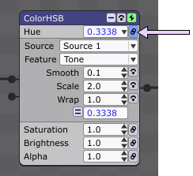
Screenshots are mostly from the Windows version of Magic. Fonts differ slightly across various operating systems and versions, but most other aspects of the user interface are identical.
Window title bars, buttons, and borders are intentionally omitted from screenshots whenever possible to reduce unnecessary visual clutter and to minimize differences between operating systems.
Keyboard shortcuts are specific to the operating system, and will be listed in bold text with Windows first and macOS second; for example, Ctrl+A / Cmd+A. Windows shortcuts generally use Ctrl, and macOS shortcuts generally use Cmd (Command).
Main menu items are listed in bold and italics text, with each subsequent menu level separated by a ">" sign, such as File > New Project. Context and pop-up menu items are listed in italics only, such as Add > Geometry > Polygon.
Hyperlinked text points to the section or chapter that it describes. Follow these links to advance to the referenced section.
Tip: Brief notes in this font size will give alternative examples of using particular settings, or will announce additional helpful features in Magic.
PC:
Mac:
Both systems:
Minimum system configuration:
Ideal system configuration:
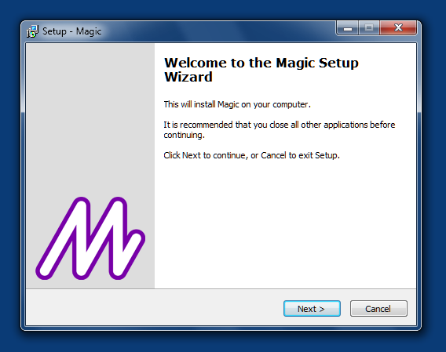
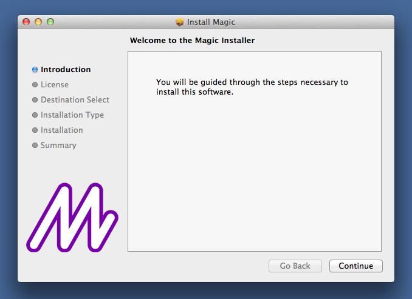
The demo version of Magic is completely free. It requires no activation, and it can be used for an unlimited amount of time. It contains all the functionality of the full version, including almost all the Performer edition features, except that saving is disabled, and a watermark will appear on the output after 30 days.
The demo version is a separate download from the full version. The demo version can be downloaded directly from the Magic download page. No registration is required.
The full version can only be downloaded by registered users.
Before the full version of Magic can be used, it must be activated with a license key. The first time Magic runs, the Activation dialog will appear:
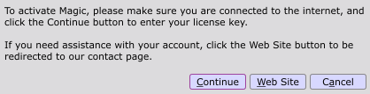
To activate Magic with a license key that has been purchased, simply click the Continue button, and paste the key into the box.
Note: Depending upon the purchase, one license key may contain multiple activations, but each activation can only be used on one computer at a time.
If any problems with activation are encountered, click the Web Site button to open the Magic web site's contact page, and submit a "License Key / Activation" inquiry.
Magic can be deactivated at any time by selecting Help > Deactivate in the main menu. This allows the activation to be transferred, such as when a new computer is purchased. Up to 4 deactivations per year are allowed.
Deactivation is not intended for repeatedly transferring an activation back and forth between two computers. In this case, an additional activation must be purchased.
The full version of Magic is available in two editions: Studio and Performer. Both editions are accessed from the same installation, and both can be used for commercial purposes without any restrictions. The main difference is that Performer unlocks extra features for VJing and live performance, such as:
Studio does not provide access to these features. However, Studio still contains most of the overall functionality in Magic, and can be used to create beautiful professional-quality music videos and real-time music visualizations. Studio is an excellent value for beginning users, and it can be upgraded to Performer at any time.
Studio has one additional requirement which Performer does not have: it needs an internet connection at least once every 30 days to synchronize with our license management server. If an internet connection is not available when the synchronization is requested, Studio will be temporarily disabled. Performer does not have this requirement, and after initial activation, it can be used offline indefinitely without being disabled. Users with limited internet access are strongly recommended to purchase Performer.
For the latest pricing information about Studio and Performer, visit our purchase page.
The tutorial below will outline the basics of using Magic to create a simple project that reacts to audio input. To start with a more detailed guide, skip directly to the Interface chapter.
To load the finished version of the project created in this tutorial, select Help > Open Sample Project, and choose "DemoProject.magic". The demo project can also be loaded automatically when Magic is run for the first time.
Tip: A variety of other sample projects are available via Help > Open Sample Project, including more advanced examples.
Magic can simultaneously use audio, MIDI, and OSC as input sources. The following example will focus on audio only; for information on MIDI and OSC, see the MIDI and OSC input sections.
Note: MIDI and OSC are only available in the Performer edition.
Any audio device that is available on the computer can be used for live input, such as a microphone, input jack, or external sound card. The default input device will be automatically selected. To view the current device, open the Input Sources Window by choosing Window > Input Sources Window, and select Show Audio Config from the drop-down menu:
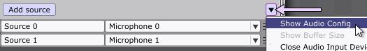
The current device will appear in a box at the top of the window, as shown below. To change the device, click the box and select another option from the menu.
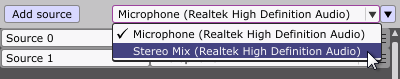
In Magic, graphics are created with components called modules. Modules are connected together to form scenes.
In a new project, the Editor Window will start with an empty scene containing only the Magic module:
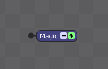
The Magic module is a special module, because it is the only method of displaying the scene in the Magic Window. Modules are always connected left to right, and the Magic module will always be the final module in the scene.
In the Editor Window, right-click in the work area (or Ctrl-click in macOS), and choose Add > Geometry > Polygon.
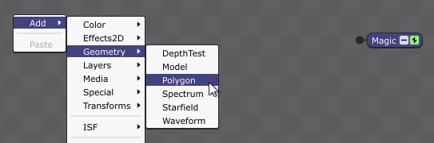
The Polygon module is added to the scene, and is automatically connected to the Magic module.
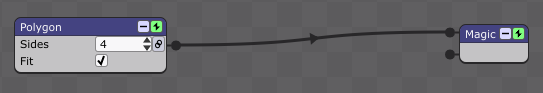
As the name and parameters suggest, the Polygon module defaults to drawing a 4-sided polygon (square), which is displayed in the Magic Window. At this point, the square is motionless in the window.
Right-click on the black connector between the Polygon module and the Magic module. Select Insert > Transforms > Scale.
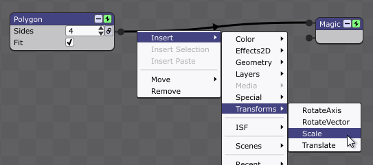
The Scale module changes the scale (size) of any modules connected to the input pins on its left side. The initial X/Y/Z parameter values for the Scale module are all 1.0, meaning that, by default, no scaling takes place.
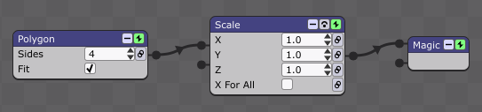
To allow the scaling to change dynamically in response to audio input, it can be "linked". Click the link button for the Y parameter:
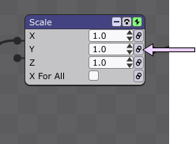
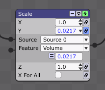
Linking causes the Y parameter to change as the audio volume changes; the corresponding value can be seen changing in the text box. As a result, the Y-scaling is applied to the square, and the square shrinks and grows vertically in the Magic Window — a simple, yet perceptually very powerful, effect.
If the currently selected audio input is a microphone, try talking, singing, or clapping to see how the scaling of the square responds to changes in sound volume.
In general, the ability to draw and modify graphics in response to audio, MIDI and OSC is the principal idea upon which Magic is based. The various module options can cause the graphics to respond in many different ways. Much more detailed information about working with modules is available in the rest of this guide.
Tip: Press Ctrl+F / Cmd+F to enter and exit the Magic Window's fullscreen mode.
There are five main windows in Magic: Input Sources, Editor, Magic, Preview, and Playlist. These are described in detail in subsequent chapters.
The Input Sources Window, Editor Window, and Playlist Window default to a neutral gray color scheme with black text, which is suitable for most ambient lighting conditions. Nearly all screenshots in this User's Guide are shown in the default color scheme:
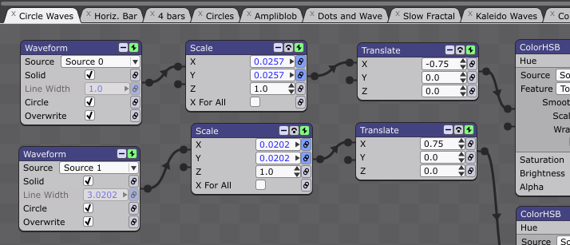
Alternatively, a darker UI mode can be enabled by selecting Help > Dark UI Mode:
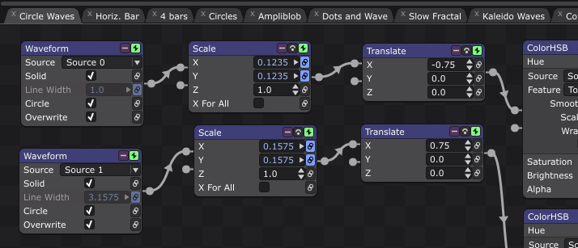
Dark UI Mode contains dark gray backgrounds with white text, and serves to minimize eye strain in very low-light conditions, such as clubs and concerts.
Note: Dark UI Mode will be auto-detected on newer operating systems.
By default, the Input Sources, Magic, Preview, and Playlist Windows float above the Editor Window. This setting can be changed by toggling Window > Window Layout > [Window Name] Above Editor for any of the desired windows.
Magic remembers the window positions and sizes as they were when the application was last closed. To disable this, and always use the default window positions, uncheck Window > Window Layout > Save Window Positions. This setting is not project-specific; saving the window positions carries over to all projects opened while the option is selected.
Note: Closing the Editor Window will quit the application entirely. Closing the Input Sources, Magic, Preview, or Playlist Windows will not quit the program.
Even if Save Window Positions is enabled, the Magic Window's fullscreen position will not be saved. To configure the startup behavior of the Magic Window, use the Start In Fullscreen option.
At any time, the default window positions can be restored by choosing Window > Window Layout > Reset Window Positions or by using the keyboard shortcut Shift+Ctrl+R (Windows) or Shift+Cmd+R (macOS). This can be used whether or not Save Window Positions is enabled.
If Magic's default font is too small to be read easily on high-resolution displays, the keyboard shortcut Ctrl+0 (Windows) or Cmd+0 (macOS) can be used to increase the font size, and Ctrl+9 (Windows) or Cmd+9 (macOS) can be used to decrease the size. These options are also available in Window > Window Layout. Changing the font size does not affect the functionality of the application in any way.
The Input Sources Window allows the main audio input device to be selected (such as a built-in microphone or an external sound card), audio/MIDI/OSC sources to be configured, and audio and MIDI files to be added.
Note: MIDI and OSC are only supported in the Performer edition of Magic.
To show the Input Sources Window, choose Window > Input Sources Window, or use the keyboard shortcut Shift+Ctrl+I (Windows) or Shift+Cmd+I (macOS). Use the keyboard shortcut again to close the window, or close it by clicking the red "X" in the top right corner (Windows) or the red dot in the top left corner (macOS).
Magic will recognize any audio input device available on the computer, and the default device will be automatically selected. To view the current device, choose Show Audio Config from the drop-down menu in the upper-right corner:
The current device will appear in a box at the top of the window, as shown below. To change the device, click the box and select another option from the menu.
Magic allows the current audio device's input channels, as well as any available MIDI device input channels and OSC input ports, to be used individually and separately. Each source in the project can have a custom label, and can be re-routed to a different device or file without affecting any module settings. This will be described in more detail below.
When a new project is started, default sources will already have been created for the selected audio device's channels. There will be as many default sources in the project as there are channels on the device. The sources will be labeled "Source #", where # goes from 0 to the number of channels.
On most Macs and PCs, the default configuration will have two sources, one for each of the stereo channels: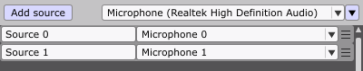
However, some audio devices, especially those designed for professional use, provide more than 2 channels. Such devices allow Magic to respond to many independent audio sources at once. Here is an example of an audio device that has 12 channels:
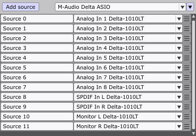
With devices like this, scenes can be created that respond in distinct ways to every individual instrument in a live music performance, for example.
Sources in the Input Sources Window are always labeled "Source #" by default, but each label can easily be edited by clicking inside its text box, as shown below:
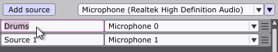
Re-labeling the sources is quite useful, because modules in the Editor Window use these labels, not the device/file names. This way, when it comes time to design some scenes, the available sources for each module will be clearly described.
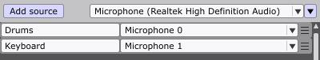
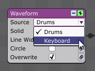
Labels will remain consistent even when the audio device is changed. In most cases, the sources will automatically re-route themselves to the new device, meaning that modules won't have to be updated.
To manually change the routing of any source, click its drop-down box:
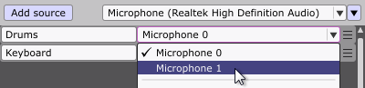
This new routing will reflect in all modules in the project automatically; no other re-configuration is necessary.
Not all the sources for the audio device have to be used. Similarly, there can always be more sources than the device supports. Either of these cases might be true if a different device with a different number of inputs will be used in the future, or if MIDI, OSC, or file playback will be used at some point.
To create a new source, click the button labeled "Add source" at the top of the window:
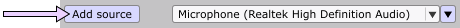
To remove a source, right-click its selection tab to access the options menu, and choose the Remove option:
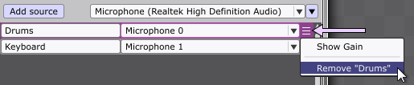
Every source in the project uses some processor resources, so for optimum performance, unused sources should be removed. To easily remove all unused sources at once, open the drop-down menu in the upper-right corner of the Input Sources Window, and select Remove Unused Sources.
If audio sources (either live audio or audio files) are not producing the correct volume, up to 24 decibels of positive or negative gain can be added. To adjust the gain on an audio source, right-click its selection tab to access the options menu, and choose Show Gain:
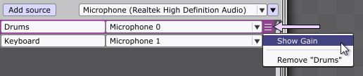
A slider will appear, allowing the gain amount to be adjusted by dragging, as shown below.
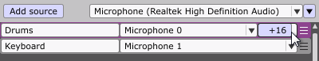
The gain settings are independent for each audio source, and are saved with the project.
For advanced control of the audio input device, its buffer size can be configured by choosing Show Buffer Size from the drop-down menu in the upper-right corner:
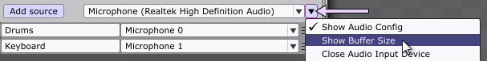
A drop-down box will appear, allowing a precise numerical value for the buffer size to be set:
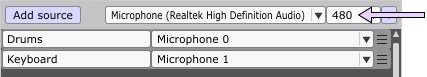
A smaller buffer size means that the computer processes less audio data more often, resulting in improved responsiveness at the cost of a higher strain on the CPU. See the Optimizing For Live Performance section for more details on how buffer size affects Magic. For the beginning user, leaving the buffer size at its default will suffice.
Note: MIDI input is only available in the Performer edition.
Any MIDI devices that are connected to the system can be used as input sources. To use a MIDI device as a source, simply select it from the drop-down box, as shown below. MIDI devices are always displayed below audio devices.
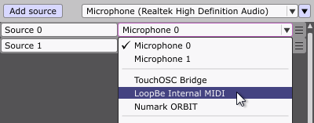
Tip: The MIDI device list can be updated at any time by selecting Re-Scan MIDI Devices from the Input Sources Window's drop-down menu.
When a MIDI device is selected, another drop-down box will appear to the right, as shown below. This indicates the MIDI channel to be used, and can be set from 0 to 16. Channel 1 is the default.
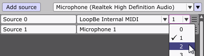
Note: Channel 0 indicates the "global" channel for commands that are not channel-specific, such as Beat Clock.
It is important to understand that MIDI sources and audio sources do not provide the same features to modules, as shown below.
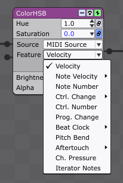
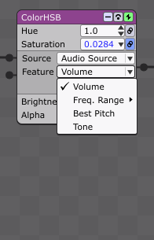
For more information about this, see the MIDI features and Audio features sections in the Modules chapter.
To detect MIDI commands automatically instead of configuring them manually, use the MIDI/OSC Learn feature, as described later in this User's Guide.
Note: OSC input is only available in the Performer edition.
Any computer with a network connection can be used to receive OSC (Open Sound Control) messages. In many ways, OSC is a replacement for MIDI.
To use OSC as an input source, simply select it from the drop-down box, as shown below. OSC is always displayed below audio and MIDI devices/files.
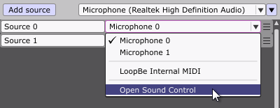
When OSC is selected, an additional box will appear to the right, as shown below. This represents the OSC port, and should be set to match the value of the controller on the other end of the network. The default port is 8000.
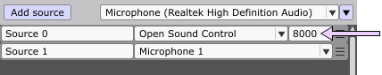
OSC is an open-ended protocol, meaning there is no pre-defined set of messages. Thus, when a module parameter is configured to use an OSC source, a text box will be displayed for the Feature, rather than a drop-down box:
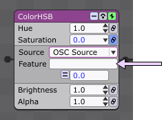
To configure the text box, enter the OSC command corresponding to the controller on the other end of the network:
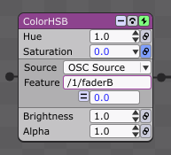
OSC commands can be complex, and are not meant to be entered manually. To automatically detect and enter OSC commands, use the MIDI/OSC Learn feature, as described later in this User's Guide.
Note: MIDI files can only be added in the Performer edition.
In addition to live input, the Input Sources Window allows many kinds of files to be loaded and used as module sources. In Magic, the only difference between live input and file input is that files must be played (using the playback controls) for graphics to respond. The playback controls do not affect live input, and live input can always be used simultaneously with file playback.
Magic supports a variety of audio file formats, including .mp3, .wav, .aif, .ogg, and .flac. Windows also supports Windows Media Audio files, such as .wma, and macOS supports additional formats, such as .aac. Depending upon what codecs are installed on the computer, even more formats may be available.
Magic also supports MIDI files in the .mid format, but a MIDI output device is required to play the notes. See the MIDI file options section for more information on configuring a MIDI output device.
To add audio or MIDI files, click the button at the bottom of the Input Sources Window:
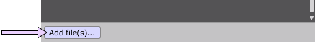
A file selection dialog will appear, allowing one or more files to be chosen. Alternatively, files can be dragged directly from an operating system folder into the Input Sources Window.
After a file has been added, it will appear in the file area in the lower section of the window, as shown below.
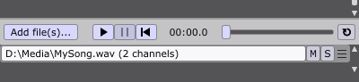
When one or more files have been added, the playback buttons (play/pause/rewind) will become visible, as shown above. Additionally, the file area can be resized by dragging the divider above the buttons.
If the file's full pathname is too long to fit in the window, the drop-down menu option Show Full File Paths can be deselected to display the filename only.
Adding a file does not automatically assign it to a source; the file must be selected from an available source's drop-down box, as shown below.
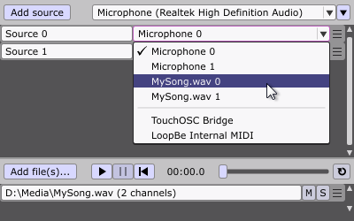
Multiple files can be added and used simultaneously, allowing modules to respond independently to separate aspects of the music. The example below shows three .wav files that have been added and assigned to four sources. For convenience, the sources have been labeled accordingly.
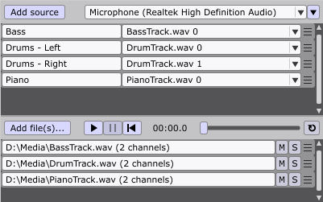
Every channel in every file is an available source, indicated by the filename and the channel number. For audio files, the most common format is 2-channel stereo, so the available channels are 0 and 1, as shown in the sources above labeled "Drums". However, Magic supports audio files with any number of channels — as few as 1 (mono), and as many as 8, 16, 32, or more. Audio files in surround-sound formats, such as 5.1 and 7.1, will show as having 6 and 8 channels, respectively, and so on.
MIDI files, like live MIDI inputs, always contain 16 channels. Any channel can be used, but some channels may not contain any relevant information, depending on the file.
To control the playback of the files, use the play, pause, and rewind buttons, as shown below. Additionally, the keyboard shortcuts Shift+Ctrl+Space (Windows) or Shift+Cmd+Space (macOS) can be used to toggle play/pause from anywhere in the application, and Shift+Ctrl+W (Windows) or Shift+Cmd+W (macOS) can be used to rewind.
The current playback time is displayed next to the playback buttons in minutes:seconds.tenths, as shown above. Hours will also be displayed, if necessary. The slider on the right can be used to shuttle forward or backward in time. On the far right, the loop toggle button can be used to automatically start the files again when they are done playing. Looping will occur at the end of the longest file.
Pressing the play button plays all of the files at the same time. Individual files can be muted by clicking their "M" buttons, and soloed using their "S" buttons:
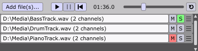
Solo always overrides mute, so a file will be audible if it is both soloed and muted. Note that soloing and muting only control if the file is heard, but do not control whether any modules draw graphics based on the file.
By default, all audio files are played directly from the drive where they are stored. Most traditional HDDs (hard disk drives) are sufficient to handle playback of one or two audio files, and most SSDs (solid state drives) can handle many simultaneous audio files. However, if any kind of popping, clicking, or other audio glitching occurs during playback, it is generally an indication that the drive is not fast enough.
To solve this issue, audio files can be loaded entirely into system memory (RAM) using the option Load Audio Files Into Memory, which is located in the Input Sources Window's drop-down menu in the upper-right corner. Enabling this option will almost always improve audio playback performance, but it does use a significant amount of memory. Loading very long audio files into memory can sometimes cause problems. Always save the current project before attempting to load audio files into memory.
Note: MIDI files can only be used in the Performer edition.
MIDI file playback is nearly identical to audio file playback. After a MIDI file has been added, it can be assigned to a source:
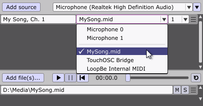
The only difference is that the MIDI channel must be selected. Channel 1 is selected above.
Tip: To see an example of a MIDI file in use, select Help > Open Sample Project and choose "MIDIFileExample.magic".
To hear a MIDI file, a MIDI output device must be used. The default device will be automatically selected; to change the device, use the option in the Input Sources Window's drop-down menu:
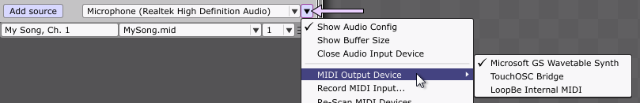
The chosen device will be saved and used when Magic is run in the future.
For more information on using MIDI in Magic, see the MIDI Features section.
The options menu for each file can be accessed by right-clicking its selection tab to the right of the solo button:
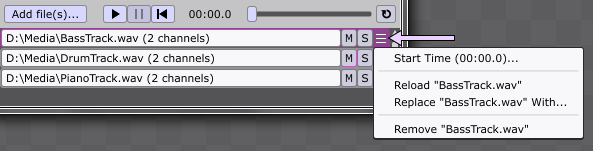
The Start time option can be used to change when playback of the file will begin. A positive start time will cause playback to begin later; for example, 00:02.0 will result in two seconds of silence before the file. A negative start time will cause playback to begin earlier; for example, -00:02.0 will result in the first two seconds of the file being cut off.
The Reload option can be used to reload the file if it has changed on disk since it was initially added. This is useful if the file is currently being edited in another application. Alternatively, the Replace With option can be used to replace the file with a completely different one. Replacing a file will automatically re-route any sources that used the previous file.
The Remove option can be used to remove the file from the project entirely. Every file in the project uses some amount of memory and CPU, so for optimum performance, unused files should be always be removed.
Note: Recording MIDI input is only available in the Performer edition.
Magic can be used to record MIDI input to a MIDI file for playback at any later time. To access the recording function, select the Record MIDI Input option in the Input Sources Window's drop-down menu:
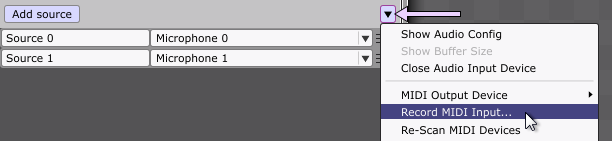
A small window will appear above the Input Sources Window, as shown below.
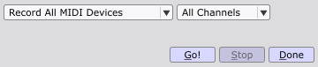
By default, Magic will record input from all MIDI devices on all channels. To record only a specific device or channel, select the desired option(s) from the drop-down boxes.
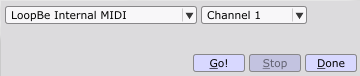
To start the recording, click the Go! button. After a 5-second countdown, any MIDI commands will be shown in the window as they are detected:
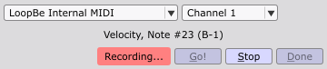
To stop the recording, click the Stop button. A file save dialog will open, allowing the recording to be saved to a traditional MIDI (.mid) file. The file is then automatically added to the project.
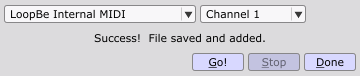
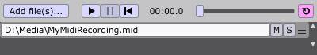
In general, MIDI recording can be used while any other aspect of Magic is being used. The only functions that are prohibited during MIDI recording are project saving and movie exporting. MIDI recording will automatically start playback of any other files in the project, but overall, MIDI recording is not tied to the playback controls. Recording will continue even if the pause or rewind buttons are pressed, allowing for greater freedom in experimenting with ideas.
Note: Magic does not provide any functionality for editing MIDI files. A third-party MIDI editing application must be used.
Each source and file has a selection tab located on the right side of its row, as shown below. When the selection tab is clicked, it becomes highlighted in magenta. Multiple rows can be selected by Ctrl-clicking (Windows) or Cmd-clicking (macOS). Shift-clicking can also be used to select a range of rows.
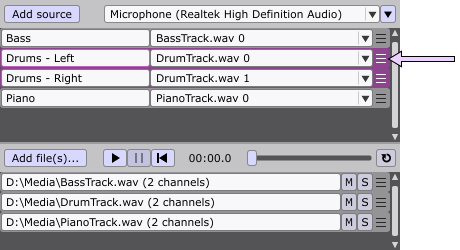
When one or more rows are selected, they can be reordered by dragging the selection tabs:
Reordering the rows has no effect on the project other than how they are visually displayed in the Input Sources Window; however, it is often useful to group related rows together for organizational purposes.
Selection is not only used for dragging; it affects all operations in the options menus, as shown below. For audio sources, the gain can be shown/adjusted on several rows at once, or for any type of source, several rows can be removed at once:
Similarly, several files can be reloaded or removed at once, or start times can be adjusted at once:
Selection also affects Mute and Solo for files, but the Replace With option is not available when multiple files are selected.
At any time, the selection can be reset by clicking an individual row or anywhere outside of a row.
Certain sound cards and audio interfaces will have an input device available called "Monitor", "What You Hear", "Stereo Mix", "Rec. Playback", or something similar. This kind of device allows Magic to listen to other audio applications running on the system, resulting in an infinite variety of sources to power Magic's visuals. Magic can respond to media players, music composition and recording programs, web browsers, and much more.
If no available audio devices support this functionality, a virtual audio driver can be installed. Several good free drivers are available that allow audio to be easily routed between applications, such as VB-Cable (Windows) or Soundflower (macOS).
Additionally, many free utilities exist for routing MIDI between applications. A good Windows utility is LoopBe1, and a good macOS utility is MIDI Patchbay.
The Editor Window is the heart of Magic. It allows a variety of graphical effects to be created, customized, and combined in many different ways. In Magic, effects are created with components called modules, and modules are connected together to form scenes.
This chapter will describe the basics of using scenes and modules in the Editor Window. More detailed information about the inner workings of modules can be found in the Modules chapter.
Scenes are groups of modules that serve a particular visual purpose, such as adding effects to a video, or generating a geometric pattern from scratch. A Magic project often contains many scenes, which can correspond to different sections of a song, or to different songs.
New Magic projects start with one scene. To add another scene, select the menu option Scene > Add New Scene, or use the keyboard shortcut Shift+Ctrl+N (Windows) or Shift+Cmd+N (macOS). Added scenes are named "Scene #" by default, where # is the order in which they were added.
Tip: In Magic, all numbering starts at 0.
Most of Magic's functionality relating to scenes can be accessed from two areas: the Tab Panel and the Folder Panel.
The Tab Panel is Magic's primary method of organizing, editing, and displaying scenes. In the Tab Panel, multiple scenes are organized via tabs at the top of the Editor Window:
Clicking a tab brings its scene to the front of window, and displays the scene's output in the Magic Window. The name of the current scene is also shown in the title of the Editor Window.
To edit a scene without displaying its output in the Magic Window, Ctrl-click (Windows) or Cmd-click (macOS) its tab. The scene being edited does not have to be the same as the scene being displayed; this allows edits to be made without disrupting a live performance.
Note: When the playlist is used to navigate through the scenes, the scene being edited may also be different than the scene being displayed.
Keyboard shortcuts can be used to navigate through the tabs. The next tab can be selected with Ctrl+T (Windows) or Cmd+T (macOS), and the previous tab can be selected with Ctrl+R / Cmd+R. These shortcuts are especially useful when the Magic Window is covering the Editor Window in fullscreen mode, and the tabs cannot be clicked with the mouse.
A tab can be dragged left or right to reposition it. Repositioning has no effect on the project other than how the tabs are visually displayed at the top of the Editor Window; however, it is often useful to group related tabs together for organizational purposes. If the tabs cannot all fit in the window, a horizontal scrollbar will appear above them.
A tab can be closed by clicking its "x" button. Closing a tab only hides it temporarily, and it can be reopened from the Folder Panel. To remove the scene from the project entirely, use the Remove Scene option in the Tab Menu (see next section).
For a bit more space in the work area, the entire Tab Panel can be hidden by selecting the main menu option Scene > Show/Hide Tab Panel, or by using the keyboard shortcut Shift+Ctrl+T (Windows) or Shift+Cmd+T (macOS).
Right-clicking a tab (or Ctrl-clicking in macOS) displays an options menu, with many different functions:
A new blank scene can be inserted before the selected scene by choosing Insert New Scene Here.
The selected scene can be renamed by choosing Rename Scene.
The selected scene can be duplicated by choosing Duplicate Scene. The duplicated scene will be inserted after the selected scene. To save horizontal space, duplicated scenes have "1" appended to the name rather than "copy".
The selected scene can be removed by choosing Remove Scene. This option removes the scene from the project entirely, as opposed to closing the tab by clicking its "x" button, which only hides it temporarily (see Tab Panel section).
The selected scene can be saved to its own project by choosing Save Scene To Project. For more information, see Saving Individual Scenes/Folders.
The selected scene can be added to the end of the Playlist by choosing Add Scene To Playlist.
All "x" buttons can be hidden by choosing the Hide Close Buttons option. This saves a bit of space, and prevents tabs from accidentally being closed during a performance. When the "x" buttons are hidden, the menu option Close This Tab can be used to close the tab.
All tabs can be closed at once by choosing Close All Tabs, or all tabs except the current one can be closed by choosing Close All Tabs But This.
Other Tab Menu options will be discussed in later chapters.
The Folder Panel contains many similar options to the Tab Panel, but provides the additional ability to group scenes into folders. The Folder Panel is not visible by default, but it can be shown by selecting the menu option Scene > Show/Hide Folder Panel or using the keyboard shortcut Shift+Ctrl+F (Windows) or Shift+Cmd+F (macOS). When visible, the Folder Panel can be hidden again by clicking the "x" button in the upper-right corner, or by using the same keyboard shortcut.
The Folder Panel is an organizational structure that allows scenes to be grouped together for whatever purposes are relevant to the project and/or the user. Any number of folders can be added to the project, including unlimited nested folders (folders within folders). To save space, folders can be collapsed or expanded by clicking their arrow buttons.
Tip: To see an example of how folders can be used, select Help > Open Sample Project and choose "FoldersExample.magic".
It is important to understand that folders have no functional effect on the project or its scenes. All scenes are always accessible from all other parts of the application, such as the Playlist Window or Scene Modules. This is true regardless of the arrangement of folders in the Folder Panel, and regardless of whether any folders are collapsed or expanded.
The Add scene and Add folder buttons at the top of the Folder Panel can be used to quickly add new scenes and new folders to the project. The Add scene button provides the same function as the menu option Scene > Add New Scene or the keyboard shortcut Shift+Ctrl+N (Windows) or Shift+Cmd+N (macOS).
The current scene in the main Editor area has a white outline in the Folder Panel, as shown below:
To select a different scene for the Editor, hover over any scene name in the Folder Panel, and click the arrow button on the right side:
Clicking the arrow button in the Folder Panel makes the scene current in the Editor area, and displays its output in the Magic Window. Clicking the arrow button is the same as clicking the corresponding tab in the Tab Panel, and the tab becomes selected, as shown above.
Holding down Ctrl (Windows) or Cmd (macOS) while clicking the arrow button makes the scene current in the Editor area, but does not affect what is being displayed in the Magic Window.
Right-clicking a folder (or Ctrl-clicking in macOS) displays a folder-specific menu, with several options:
The Add New Scene and Add New Folder options allow a scene or folder to be added directly to the selected folder, rather than to the end of the list.
The Duplicate Folder and Remove Folder options duplicate or remove the entire folder, including all items contained within.
The Add Folder To Playlist option adds the scenes in the selected folder to the Playlist, and the Replace Playlist With Folder option replaces the scenes in the Playlist with the scenes in the selected folder.
For information about the Save Folder To Project option, see Saving Individual Scenes/Folders.
Other Folder Menu options will be discussed in later chapters.
In the Folder Panel, right-clicking a scene (or Ctrl-clicking in macOS) displays a menu that is identical to the Tab Panel's tab menu, with the exception of the tab-specific options:
See the Tab Menu section for a description of these options.
To select multiple items in the Folder Panel, use Ctrl-clicking (Windows) or Cmd-clicking (macOS), or Shift-clicking to select a range. The selection is highlighted in magenta, as shown below. When multiple items are selected, the Folder Panel menus allow all options to be applied to the entire selection.
To move any item in the Folder Panel, simply use the mouse to drag it to a new location. When multiple items are selected, they can be moved simultaneously, as shown below:
Moving scenes and folders has no effect on the project other than how they are visually displayed in the Folder Panel; however, it is often useful to group related items together for organizational purposes.
All modules in a scene appear in the work area of the Editor Window, indicated by the gray checkerboard pattern, as shown below. To add a module, right-click to bring up the Add menu, and select an option:
Added modules will appear where the mouse was originally right-clicked to bring up the menu.
Modules are represented by small boxes with a blue title bar, as shown above. Most modules have editable parameters.
By default, modules are automatically connected to the nearest module on their right side, when available. To change this, deselect the menu option Scene > Scene Editor Options > Auto-Connect Added Modules.
Every module must directly or indirectly connect to the Magic module in order to be used in the scene:
The Magic module cannot be removed, because it is the only method of displaying the scene in the Magic Window. For more information about the Magic Window, see the Magic Window chapter.
The black connection points on modules are called "pins". To connect two pins that are not already connected, drag from one pin to another, as shown below.
Dragging will automatically snap to a pin if it is close enough.
Note: There are other ways to connect pins which may be faster in certain cases. See the Connecting Selected Modules section for more information.
A pin on the right side of a module is always an output, and a pin on the left side is always an input. Therefore, modules that draw things from scratch, such as Polygon or Image, have only output pins — pins on the right side. Modules that modify things, such as ColorRGB or Scale, have pins on both sides. The Magic module has only input pins.
A pin must always be connected to its opposite type of pin: output to input, or input to output. Output pins can never be connected to other output pins, and input pins can never be connected to other input pins.
Arrows on the connectors indicate the directional flow from output to input pins. Modules may be placed anywhere inside the work area, but the general flow is designed to move left to right.
The example below shows that multiple outputs from a module run through one pin, while each input has its own distinct pin. Placing a connector on an input automatically creates one new free input pin, and expands the module vertically to accommodate the increased size.
A module can have multiple output connections, as the Polygon module above demonstrates. In this case, the Polygon will be drawn three times in the scene: first through the Scale module, then by itself, then through the RotateAxis module. Using the same module multiple times is often a more efficient way to design a scene, because it uses less of the processor and memory. This is especially true for more resource-intensive modules, such as VideoFile.
A module can be added between two connected modules by right-clicking the connector and choosing the Insert submenu, a shown below.
The list of available Insert modules is limited to those with both input and output pins. Submenus containing no modules with input pins will be grayed out, as shown above with the Media submenu.
The top-to-bottom order of connectors is important, because it determines what module is drawn first, and therefore in front of, the other modules. The top connector and input pin always represent the top layer of drawing, and each subsequent connector and input pin represent the next layer underneath. In the following example, the red square (represented by the top ColorRGB module) is connected to the top input pin of the Magic module, and is therefore drawn in front of the blue square. The blue square is Translated a bit to the left so that it can be seen underneath.
To change the top-to-bottom order, a connector can be moved by using the mouse to drag it to a higher or lower pin:
Alternatively, a connector can be moved by right-clicking it and choosing the Move submenu; available options are Top, Up, Down, or Bottom, depending on the connector's current position.
Moving the Translate module's output connector to the top causes it to occupy the top pin on the Magic module. As a result, the blue square will be drawn on top.
When an existing input connector is moved, or a new input connector is added, the other connectors will move up or down accordingly to make room.
Most of Magic's included modules use the method described above to draw their inputs. The input pins determine the order of drawing, and multiple inputs are always composited together into one final input before they are processed by the module.
However, the modules in the Layers submenu behave somewhat differently; they require at least two separate inputs. The inputs are treated independently and are not composited together. The top input pin will be the first independent input, the next pin will be the next input, and so on. To see examples of Layers modules with independent inputs, select Help > Open Sample Project and choose "LayersExamples.magic".
Different modules require different amounts of independent inputs, so consult each module's documentation to determine how many inputs it uses. Inputs beyond the required amount will generally not be drawn.
Many third-party effects also use independent inputs, including FFGL plugins, ISF files, and certain shaders used with the GLSLShader module. Each effect is unique, so its documentation must be consulted to learn what inputs it requires.
The menu for each module can be accessed by right-clicking its title bar:
The various menu items will be discussed in greater detail below.
To easily add a new module as an output or input to an existing module, select Add Input or Add Output from the module menu, as shown below:
Adding a module as an input will connect it to the left side of the existing module, as shown above, and adding it as an output will connect it to the right side.
To insert a new module between two or more modules that are already connected, use the Insert Input or Insert Output menu options:
Inserting a module is useful when there are several existing connections to the module, as shown above. The connectors are moved automatically, so they do not need to be redone one by one.
Only those modules with input pins can be added or inserted as outputs. Additionally, the Add Input and Insert Input menus will only be available if the module has an input pin. The Polygon module, for example, does not have an input pin, so its Add Input and Insert Input menus are disabled:
To remove a module, choose Edit > Remove from the module menu:
Additionally, the main menu command Edit > Remove Module(s) or the Delete or Backspace keys can be used to remove all currently selected modules.
Removing a module will not remove its surrounding connectors, as shown above. To remove a connector, right-click it, and choose Remove from the pop-up menu:
A connector can also be removed by dragging it away from the module, and releasing it in the empty area. Additionally, multiple connectors may be removed at once by choosing Disconnect > Inputs, Disconnect > Outputs, or Disconnect > All from the module menu:
Instead of removing a module, adding a new one in its place, and reconnecting it, it can be replaced in one step using the Replace With option in the module menu:
The new module will automatically be connected wherever the previous one was connected. If the new module doesn't have input pins, it won't be connected to any previous inputs.
A module can also be replaced by the next or previous module in the menu list by using the options Replace With > Previous Module and Replace With > Next Module:
The keyboard shortcuts Ctrl/Cmd + Cursor Up (↑) and Cursor Down (↓) provide the most convenient way for accessing these options, and they can be used when one or more modules are selected, allowing for quick and easy browsing of all available modules. The Shift key can also be added to replace modules with only those of the same type (with input pins, or without input pins).
Magic has a convenient module search function which can be accessed via the keyboard shortcut Shift+Ctrl+A (Windows) / Shift+Cmd+A (macOS). When this keyboard shortcut is invoked, a search box will appear at the current position of the mouse in the work area:
Typing a few letters will show a list of all modules that match the entered text:
The up/down arrow keys or the mouse can then be used to scroll the list, and pressing Enter or clicking with the mouse will add the selected module at the current location in the work area:
The search function is particularly convienient for users who have added many additional modules, avoiding the need to browse through long lists in the module menus to find the desired one.
The search function is context-sensitive. If it is invoked when the mouse is hovering over a connector, the search box will insert the selected module into the connector:
Additional context-sensitive options are available from the module Replace/Add/Insert menus. When selected from these menus, the search function will perform the corresponding operation.
Scene modules are special modules that allow scenes to be drawn within other scenes. Scene modules provide an efficient way to encapsulate entire chains of modules so they can be used multiple times. Scene modules are also convenient for saving space in the work area.
To add a Scene module to the current scene, right-click to bring up the Add menu, and select a scene from the Scenes submenu:
In the above example, the "Wave Star" scene will be drawn in its entirety as part of "Scene 4".
Tip: To quickly jump to the corresponding scene for a scene module, open its menu and select Goto [Scene name].
Scene modules behave like any other modules, and can be used with whatever other effects are desired. For example, the Translate module can be used to draw a scene more than once in different areas of the screen:
In the above example, the "Wave Star" scene will be drawn twice: once on the left side of the screen, and once on the right side.
When using Scene modules, keep in mind that drawing multiple scenes simultaneously requires more computing resources, so be mindful of the frame rate.
Tip: To see an example of Scene modules in use, select Help > Open Sample Project and choose "SceneModulesExample.magic" or "SceneModulesExample2.magic".
Scene modules can be used not only as sources in other scenes, but as effects with inputs. To use a scene as an effect, add one or more "SceneInput" modules by selecting Add > SceneInput:
Scene 0 can now be used as an effect in any other scene, as shown below:
Whatever is connected to the input pin of the Scene 0 module will have the effects of Scene 0 applied. In the above example, the RadialBlur effect will be applied to the Starfield.
Any number of SceneInput modules can be added to a scene. Each one is represented in top-to-bottom order by the input pins on the corresponding Scene module:
In the above example, the Waveform module is connected to the first input pin of the Scene 0 module. The first input pin is routed through the first SceneInput module in Scene 0, so the RadialBlur effect is applied to the Waveform. Similarly, the Starfield is connected to the second input pin, representing the second SceneInput module, so the ColorHSB effect is applied.
Tip: To see the above example of SceneInput modules in use, select Help > Open Sample Project and choose "SceneInputExample.magic".
To automatically add one final scene which can be used for post-processing all other scenes, use the menu command Scene > Add/Update Post-Processing Scene. A new scene called Post-Processing will be added, and all existing scenes will have a Post-Processing scene module inserted before the Magic module. The Post-Processing scene can then be edited to add effects that should apply to all scenes.
The Add/Update Post-Processing Scene command can and should be run multiple times. Changes will only be made if the project has been changed since the last time the command was run, and only if necessary to update certain scenes.
To exclude any particular scene from having a post-processing module added, select the Tab Menu option Exclude Scene From Post-Processing.
The Add > Scenes submenu contains a list of all the scenes in the current project, including the current scene. Thus, it is possible to add the current scene to itself; however, this has no effect, and the scene will not be drawn more than once. As a safeguard against infinite loops, scenes are prevented from being drawn if they reference themselves at any level. This keeps the application from freezing.
To select a module, click anywhere inside it. A selected module shows a magenta background in its title bar; an unselected module shows a blue background.
To select multiple modules, drag in the work area to create a marquee around the desired region:
The marquee doesn't have to completely enclose a module for it to be selected.
Multiple modules can also be selected, or added to or removed from the current selection, by clicking each one while holding Ctrl (Windows) or Cmd (macOS). To select all modules in the current scene at once, choose Edit > Select All or press Ctrl+A / Cmd+A.
To cut or copy a module, choose the Edit > Cut and Edit > Copy options from the module menu, or select Edit > Cut or Edit > Copy from the main menu while the module is selected. The shortcuts Ctrl+X / Cmd+X and Ctrl+C / Cmd+C can also be used for cutting and copying, respectively. Note that cutting and copying affect all selected modules, even if an individual module's menu is used to issue the command.
Cut or copied modules may be pasted in the same scene, or a new scene, by choosing Edit > Paste from the main menu. This can also be achieved by right-clicking in the work area and choosing Paste, or by using the shortcut Ctrl+V / Cmd+V.
A module may also be pasted to replace the currently selected module(s) by choosing Edit > Paste Replace from the main menu, or by using the shortcut Shift+Ctrl+V (Windows) / Shift+Cmd+V (macOS) or the module menu option Replace With > Paste:
Note that this option is only available when the clipboard contains exactly one cut or copied module.
Tip: For the full list of keyboard shortcuts in Magic, see the Table of keyboard shortcuts.
Multiple modules can be inserted between any other two modules, as long as they form a single chain with no "branches" or "forks". In the image below, a single chain has been selected by dragging the marquee around it. The chain can then be inserted into a connector by using the Insert Selection command in the connector menu:
The connector is re-routed so that it passes through the selected modules.
Similar functionality is available via the Insert Paste command, which uses the clipboard (cut or copied modules) instead of the current selection:
Unlike the Insert Selection command, the Insert Paste command can be used repeatedly on multiple different connectors, allowing for easy duplication of a module with pre-configured parameters.
Note: The Insert Selection and Insert Paste commands are only available if the desired connector can accept the modules to be inserted.
When two or more modules are selected, they can be connected using the commands in the Edit > Selected Modules submenu. The available commands are Connect Sequentially, Connect Many To One, and Connect One To Many. The corresponding keyboard shortcuts are Ctrl+W/Cmd+W, Ctrl+K/Cmd+K, and Shift+Ctrl+K/Shift+Cmd+K. These shortcuts can be used to quickly and efficiently connect several modules at once, as explained below.
The Connect Sequentially command allows a group of modules to be automatically connected in left-to-right order. In the example below, four unconnected modules have been selected:
The Ctrl+W (Windows) / Cmd+W (macOS) shortcut can then be used, which invokes the Connect Sequentially command, and connects all the selected modules together in one easy step:
This is generally faster than dragging the individual connectors one by one.
More advanced connection functionality is available via the Connect Many To One and Connect One To Many options. The Connect Many To One option connects several modules on the left to one on the right, and the Connect One To Many option does the opposite, connecting one module on the left to several on the right. In the example below, three unconnected modules have been selected:
The Ctrl+K (Windows) / Cmd+K (macOS) shortcut can then be used, which invokes the Connect Many To One command, and connects the Waveform and Starfield modules to the Magic module:
Any number of modules can be connected using this command, as long as one of them is more clearly on the right than all the others.
In the opposite scenario, where one module should connect to multiple other ones, the Shift+Ctrl+K/Shift+Cmd+K shortcut can be used to invoke the Connect One To Many command:
In this case, the Polygon module is connected to both the Scale and the Translate modules. Any number of modules can be connected this way, as long as one is more clearly on the left.
The arrangement of modules in the Editor Window is entirely up to the user. To move any module, simply drag its title bar with the mouse. All connectors remain attached when modules are moved. Modules and connectors will often overlap, but this does not affect any module or connector functionality.
Modules can be dragged anywhere in the work area, represented by the checkerboard pattern. Dragging a module past the right or bottom border of the work area will automatically enlarge and scroll it. Modules cannot be dragged past the top or left border of the work area.
When multiple modules are selected, dragging any selected module will move the entire group, maintaining each one's relative position.
All modules in the current scene can be arranged automatically by selecting Edit > Auto-Arrange All Modules or by using the shortcut Ctrl+G / Cmd+G. Auto-arranging will attempt to place modules near the top of the tab so that more of them can be seen at once. Auto-arranging will also align modules by their title bars for easier legibility. Because most display devices have a wide-screen format, auto-arranging will emphasize a horizontal layout of modules.
To save space in the work area, modules may be minimized. To minimize a module, click the "-" button; to maximize (restore) the module, click the "+" button.
To minimize or maximize all selected modules at once, choose Edit > Selected Modules > Toggle Minimized or use the keyboard shortcut Ctrl+M (Windows) or Cmd+M (macOS). Modules can also be minimized/maximized individually by double-clicking the title bar.
Nearly all operations in Magic are undoable, including those in the Editor Window, Input Sources Window, and Playlist Window. To undo the last operation, press Ctrl+Z / Cmd+Z from anywhere in the application, or to redo, press Ctrl+Y / Cmd+Y. Additionally, Undo and Redo can be selected from the Edit menu, which displays specific information about the most recent undoable and redoable operations.
By default, when Undo or Redo are used for module operations in the Editor Window, Magic will switch to the relevant scene tab. To disable this, de-select the menu option Scene > Scene Editor Options > Switch Scenes For Module Undo/Redo.
The Edit menu contains the Clear Undo History command, which can be used to reduce Magic's memory usage if the current project has been open for a long time, and many previous operations have been performed.
The undo history is always cleared when a new project is created or loaded.
Scenes created in the Editor Window end up as graphics in the Magic Window. The Magic Window is used for displaying the scene both during editing and during a performance. For this reason, there are no controls inside the Magic Window.
The Magic Window is visible by default. To hide the window, close it by clicking the red "X" in the top right corner (Windows) or the red dot in the top left corner (macOS). To show the window, or to bring it to the front, choose Window > Magic Window, or use the keyboard shortcut Shift+Ctrl+M (Windows) or Shift+Cmd+M (macOS).
The title of the Magic Window contains the name of the current scene being displayed. This scene may be different than the scene being edited in the Editor Window; see the Scenes section for more information about this.
The current graphics resolution (in pixels) and the frame rate (in frames per second) are displayed in the bottom left corner of the Magic Window, as shown below.
To toggle the display of this information on and off, choose Window > Magic Window Options > Status Information, or use the shortcut Ctrl+I (Windows) or Cmd+I (macOS).
If the status text is too small to read on high-resolution displays, the size can be increased by toggling Window > Magic Window Options > Larger Status Text Size > In Windowed Mode and/or In Fullscreen Mode. The settings for windowed mode and fullscreen mode are independent.
In general, the frame rate is a good indicator of both the complexity of the scene, and the speed of the computer. If the frame rate drops noticeably at times, various performance-improving measures can be taken, such as simplifying the scene by removing some modules. See the Optimizing For Live Performance chapter for more information.
To enter and exit the Magic Window's fullscreen mode, select Window > Magic Window Options > Toggle Fullscreen or use the shortcut Ctrl+F / Cmd+F. On multi-display systems, the fullscreen toggle will first show the Magic Window on the main display, and then on every additional display, one at a time, before returning to windowed mode only. The mouse cursor will auto-hide when it is over a fullscreen view.
Note: To completely hide the mouse cursor over a fullscreen view even when the mouse is moved, select the main menu option Window > Magic Window Options > Always Hide Mouse Over Fullscreen.
On multi-display systems, if two or more displays are the same resolution, Magic will automatically provide the option of spanning them in fullscreen mode, allowing them to output simutaneously. For the spanning to work properly, the displays must be arranged next to each other on the desktop, with their pixel coordinates aligned exactly.
Magic can be set to always start in fullscreen mode by enabling the menu option Window > Magic Window Options > Start In Fullscreen. Additionally, a specific display can be chosen using Window > Magic Window Options > Display To Use. If display #1 is chosen, Magic will start in fullscreen mode on the primary display device; otherwise, any secondary display can be used, depending upon what is currently connected to the computer.
Starting in fullscreen mode is especially useful if Magic needs to launch automatically when the computer boots. In particular, a Magic project file can be placed in the computer's startup folder, and Magic will launch with this project loaded. No other intervention is required, allowing Magic to be used in a variety of automated scenarios. Further automation can be achieved by enabling the menu option Window > Magic Window Options > Start Auto-Advance, which will engage the playlist's Auto-advance function immediately after starting in fullscreen mode.
By default, Magic will automatically exit fullscreen mode on the primary display when other applications become active. This prevents Magic from blocking access to other important system events. However, advanced users may want to disable this feature so that fullscreen mode is never interrupted. To do so, deselect the menu option Window > Magic Window Options > Exit Fullscreen For Other Apps.
To change the resolution used for rendering graphics in the Magic Window, select the menu option Window > Magic Window Options > Graphics Resolution. The Graphics Resolution dialog box will appear, with two options for adjusting the resolution.
The first option, "Use fixed resolution", is the default. It allows a constant resolution to be used for rendering graphics, regardless of the size of the Magic Window. Even if the Magic Window is resized or fullscreen mode is toggled, the graphics resolution will not change. This ensures a consistent look at any scale. The default graphics resolution is 1280x720 pixels, and the drop-down menu contains some common presets, but any arbitrary resolution can be entered up to the maximum renderbuffer size.
The second option, "Use size of Magic Window", directly links the graphics resolution to the current size of the Magic Window. If the Magic Window is made larger or smaller, the graphics resolution will correspondingly increase or decrease. Smaller sizes allow the graphics to run faster, but may not accurately duplicate the detail of larger sizes. For this reason, the second option is recommended only for users with slower graphics cards.
Whichever option is selected, the current graphics resolution is always displayed in the status information.
Note: The graphics resolution is saved with the project, and it is updated when the project is re-loaded. This may not always be desirable, such as when transferring a complex project to an older computer with a less powerful graphics card. To ignore the resolutions saved with projects, and always use the current setting specified in the Graphics Resolution dialog, enable the menu option Window > Magic Window Options > Lock Graphics Resolution.
Magic relies heavily upon the graphics card to create fast, responsive effects using hardware acceleration. For optimum performance, most modules in the current scene are stored directly in graphics memory (also known as VRAM).
By default, scenes are loaded one at a time into graphics memory. Whenever the current scene changes, the previous scene is unloaded. This ensures that enough graphics memory will always be available for the modules in the current scene. However, loading and unloading scenes from graphics memory does take a certain amount of time. Some dropped frames may be noticeable when switching from one scene to another, depending upon the complexity of the scenes. The dropped frames may be especially noticeable when using Playlist transitions.
For the smoothest possible transitions, users with high-end graphics cards may want to load multiple scenes simultaneously into graphics memory. The simplest way to do this is to enable the menu option Window > Magic Window Options > Load All Scenes Into Graphics Memory. This option ensures that there will be little or no delay when transitioning between any of the scenes in the project, because they have already all been loaded. However, loading all the scenes uses the maximum amount of memory. To reduce memory usage, users can select only certain scenes to be kept in graphics memory. This can be achieved by right-clicking any scene tab and enabling its Keep Scene In Graphics Memory option:
Any scenes with this option enabled will be kept in graphics memory indefinitely, resulting in improved performance. As a quick visual reference, these scenes will have their names shown in bold, as shown below.
Note: If the setting for Window > Magic Window Options > Load All Scenes Into Graphics Memory is enabled, individual scene settings for the Keep In Graphics Memory option will be ignored.
When using the graphics memory management options, it is also highly recommended that the amount of free graphics memory be shown in the status information. For graphics cards that support it, the menu option is Window > Magic Window Options > Show Free Graphics Memory. When enabled, the memory display is shown in kilobytes, and is a useful way to prevent/diagnose performance issues.
In the above example, approximately 2.9 GB (2900 MB) of graphics memory is available. This is usually quite a sufficient amount for even the most complex projects.
Any time the graphics memory management options are changed, or the Magic Window's graphics resolution is changed, scenes must be updated accordingly. A notice will appear in the middle of the window until the update has completed:
Each scene must be updated individually, so updating will take slightly longer when there are more scenes in the project to be loaded/unloaded/resized.
Note that if the status information is disabled, the updating message will not appear, and scenes will not be displayed during updating. Further, the updating message will never be shown on a secondary display, even if the status information is enabled. These two functionalities are provided so that audiences don't see the updating process during live performances.
When modules are disabled or bypassed, they are still using their allocated portion of graphics memory. This memory may continue to be used until the scene is updated, as described in the previous section.
At any time, selecting the menu option Window > Magic Window Options > Cleanup Graphics Memory will cause all graphics in the entire project to be unloaded, but then only reloaded for those scenes which are active (the current scene and/or any other scenes that should be kept in graphics memory). This can significantly improve overall memory availability, especially if the project has been open and edited for a long time.
The Cleanup Graphics Memory command can also be accessed with the keyboard shortcut Shift+Ctrl+C (Windows) or Shift+Cmd+C (macOS).
Note: Spout/Syphon Output is only available in the Performer edition.
Magic's graphics can be sent to other applications in real-time using Spout (Windows) or Syphon (macOS). These technologies use graphics hardware acceleration to transfer video frames between applications with very little CPU overhead, allowing Magic to be used in conjuction with a wide variety of other programs for creating live visuals.
Note: Spout works best with a graphics card supporting the NV_DX_interop extension. This is generally only available with a recent higher-end dedicated graphics card, such as from NVidia or AMD. Without the NV_DX_interop extension, Spout will run much more slowly.
To enable Spout or Syphon output, select the menu option Window > Magic Window Options > Spout Output (Windows) or Window > Magic Window Options > Syphon Output (macOS). Magic can then be selected as a source in any other compatible application; please refer to the Spout and Syphon web sites for an up-to-date list.
When Syphon or Spout output is enabled, an "s" will be shown in the status information.
Spout or Syphon output will use the graphics resolution specified in Window > Magic Window Options > Graphics Resolution, as described in the previous section.
By default, Spout and Syphon will send the alpha channel of the video frames, preserving the transparency. To disable this, unselect the menu option Window > Magic Window Options > Send Alpha Channel.
For Windows users with newer graphics cards, Spout v2 can be used (instead of v1.6) by selecting the menu option Window > Magic Window Options > Use Spout v2. Spout v2 generally provides better performance, but the latest graphics drivers must be used to avoid compatibility issues.
The Magic Window represents a three-dimensional coordinate system, commonly known as (x, y, z). The x dimension is left-right (width), the y dimension is up-down (height), and the z dimension is front-back (depth). The center of the window is aimed at the origin, or (0, 0, 0), by default.
No matter what aspect ratio or resolution the Magic Window uses, its coordinate system is always scaled to the height of the graphics output. Specifically, it is always 1 unit high in the positive y dimension, and 1 unit high in the negative y dimension, for a total of 2 units. In this way, the graphics will always maintain the proper relative proportions, regardless of any other settings.
It is important to understand that any graphics positioned exactly one unit up the y-axis — at (0, 1, 0) — will always be shown at the exact top-center of the output. Similarly, anything positioned at (0, -1, 0) will always be shown at the exact bottom-center of the output. By contrast, positioning something at (1, 0, 0) — one unit to the right on the x-axis — does not guarantee that it will be shown at the exact center-right of the output. Most video displays and formats are wider than they are tall, with aspect ratios generally ranging from 4/3 (=1.333) to 16/9 (=1.777). Magic's default graphics resolution is 1280x720, which is a 16/9 ratio, so the center-right of the Magic Window will be (1.777, 0, 0).
The aspect ratio should always be kept in mind as scenes are composed. This is especially important if the performance will be presented on a different display than the one being used for editing.
All modules operate in three-dimensional (x, y, z) space, but modules are not necessarily required to produce three-dimensional output. Some modules output only a flattened two-dimensional plane, even if they accept three-dimensional input. This is because they can only operate at the pixel level, and have no knowledge of the underlying three-dimensional geometry in the scene. However, the output of any module can always be manipulated in three dimensions (rotated, scaled, translated, etc.), even if it is just a two-dimensional plane. See the Included Modules chapter for detailed information on each module's output.
The Magic Window runs in a continual loop, drawing many frames every second. This loop may place a high demand on the computer's processor, causing other aspects of the Magic interface, and even other applications on the computer, to run slowly.
After drawing every frame, the Magic Window can be intentionally idled to allow other tasks to complete. This intentional idling is called "throttling", and the duration of throttling can be specified by choosing Window > Magic Window Options > Throttling (Frame Rate). A dialog box will appear, allowing a specific time value to be set, which must be in whole milliseconds:
The default value is 1 ms per frame, meaning that the Magic Window is guaranteed not to use the processor for at least 1 millisecond after each frame is drawn.
When vertical synchronization is enabled, the typical frame rate for most display devices is 60 frames per second. 60 fps is approximately equal to 16.6 ms per frame (1000/60), so with 1 ms of throttling, there will still be 15.6 ms left for drawing each frame. This is usually enough time for most drawing tasks to complete.
When vertical synchronization is disabled, the throttle duration more closely controls the frame rate; for example, 5 ms of throttle will result in a maximum frame rate of 200 fps (1000/5). The actual frame rate depends upon the speed of the computer and the complexity of the scene.
Throttling can be completely disabled by setting the value to 0, but this is generally not recommended, because it can cause other aspects of the operating system to run very slowly, especially on older machines.
Note that some modules are rendered differently at different frame rates, such as the strength of trails in the Trails module. This is an important consideration to be kept in mind when the throttling value is adjusted.
Vertical synchronization locks the Magic Window's frame rate to the refresh rate of the display device, and is generally necessary to prevent screen-tearing artifacts. The setting is enabled by default, but it can be disabled by deselecting Window > Magic Window Options > Vertical Sync.
In Windows, the Vertical Sync setting can often be overriden by the graphics card's control panel. Make sure that the control panel gives permission to applications to change the setting.
In the Windows version of Magic, double buffering is enabled by default, but it can be disabled by deselecting Window > Magic Window Options > Double Buffering. Disabling double buffering has the advantage of lower CPU usage at higher frame rates, but it is not compatible with all graphics cards. Additionally, vertical synchronization is often unavailable when double buffering is disabled, but it may not be necessary, depending upon the graphics card.
For Windows 7 specifically (not Windows 8+), the "Aero" interface must be enabled to prevent screen tearing when double buffering is disabled. To verify or change this setting, right-click on the Desktop, and choose Personalize from the pop-up menu. In the Personalization Control Panel, make sure the current theme is based on one of the "Aero Themes". These themes enable a graphics card setting that Magic uses.
In the macOS version of Magic, double buffering is always on, and cannot be disabled.
The Preview Window functions in much the same way as the Magic Window, allowing an additional scene to be viewed in parallel with the Magic Window's output. The main difference is that the Preview Window is intended solely for editing and reviewing scenes, and its output cannot be made fullscreen or sent to a different display.
The Preview Window is not visible by default. To show the window, choose Window > Preview Window, or use the keyboard shortcut Shift+Ctrl+E (Windows) or Shift+Cmd+E (macOS). To hide the window, close it by clicking the red "X" in the top right corner (Windows) or the red dot in the top left corner (macOS), or use the keyboard shortcut again.
Unlike the Magic Window, the Preview Window does not necessarily display a scene when it is open, as shown below.
The Preview Window uses extra graphics hardware resources, and can significantly reduce the frame rate of the Magic Window, sometimes by as much as 50%. It is advised that the Preview Window be used only when necessary, and only if the graphics hardware is powerful enough to support it.
Right-clicking anywhere inside the Preview Window opens a small menu, as shown below. The Preview Only and Preview & Edit submenus contain a list of all scenes in the project, any of which can be displayed.
The Preview & Edit option not only displays the selected scene in the Preview Window, but also changes to the selected scene in the Editor Window. By contrast, the Preview Only option displays the scene in the Preview Window, but does not change to it in the Editor Window.
When a scene is being displayed in the Preview Window, the Stop Preview menu option can be used to stop the output. The preview of the same scene can then be started again at a later time by selecting the Restart Preview option, or a different scene can be chosen from the other menu options.
It is important to understand that none of the options in the Preview Window ever affect what is being displayed in the Magic Window. This allows scenes to be edited and new scenes to be added while a performance is underway, without the audience knowing.
The Preview Menu options are also available from any scene's menu in the Tab Panel or Folder Panel, as shown below:
The Preview Scene Only and Preview & Edit Scene options are the same as the Preview Only and Preview & Edit options in the Preview Window menu described above. The Edit Scene Only option changes the current scene in the Editor Window, but does not affect the Preview Window or the Magic Window.
Preview Mode is a special mode that changes how the Tab Panel and Folder Panel affect scene output. It also changes how Magic behaves when certain actions are executed, such as adding new scenes. Preview Mode can be toggled with the menu option Scene > Preview Mode.
By default, Preview Mode is not enabled. This means that when a tab is clicked in the Tab Panel, or when the arrow is clicked in the Folder Panel, the Magic Window will display the selected scene. This behavior may not always be desirable, because edits cannot easily be made without disrupting a live performance.
Enabling Preview Mode automatically causes all scene selection to be redirected to the Preview Window, leaving the Magic Window completely undisturbed. Additionally, all actions that normally would cause the Magic Window's output to change, such as adding or duplicating a scene, will instead change the Preview Window's output. In fact, when Preview Mode is enabled, the only way to change the Magic Window's output is to use the Playlist Window (see next section).
Preview Mode is highly recommended for editing during live scenarios, because it is an easy way to safeguard the integrity and stability of the performance.
An additional benefit of the Preview Window is that it can be used to inspect the output of any individual module(s) in the scene, rather than the overall scene output. To preview any selected module's output, use the keyboard shortcut Ctrl+J (Windows) or Cmd+J (macOS), or choose the menu option Preview Here:
When a module's output is being previewed, a "P" icon will be displayed in the title bar:
Only the output of this module, and not the rest of the scene, will be displayed in the Preview Window. This provides a much more convenient way to focus on the module without any distractions, rather than disabling all the other modules in the scene.
To stop previewing a module's output, simply select the Stop Preview option in the Preview Window's menu, or select another module or scene to preview, or close the Preview Window entirely.
The Playlist Window allows a list of scenes to be created for presentation during a live performance, in a specific, customized, navigable order. In particular, the Playlist can be controlled using MIDI and/or OSC, allowing Magic scene changes to be synchronized with other electronic elements in the performance. The Playlist can also be used as a timeline for ordering scenes when exporting movies to disk.
To show the Playlist Window, or to bring it to the front, choose Window > Playlist Window, or use the keyboard shortcut Shift+Ctrl+P (Windows) or Shift+Cmd+P (macOS). To hide the window, close it by clicking the red "X" in the top right corner (Windows) or the red dot in the top left corner (macOS).
One playlist entry represents a single instance of a scene. A playlist can contain instances of some or all of the scenes in the project. A playlist can also contain multiple instances of the same scene. An unlimited number of playlist entries may be created.
To create a new playlist entry, click the "Add entry" button at the top of the Playlist Window, as shown below. This new entry will be added to the end of the list, and will be assigned to the first scene by default.
To change the assigned scene of a playlist entry, click anywhere inside the drop-down box containing the scene names, and select from the available list of scenes in the current project:
Note: The names of scenes cannot be changed in the Playlist Window. Only existing scenes can be chosen as playlist entries. See the Scenes section for more information on renaming.
Each playlist entry contains an options menu with additional commands for editing. To open the options menu, right-click the entry's selection tab on the right side of the row:
The Duplicate, Disable, and Remove commands apply to all selected entries. To select multiple entries, Ctrl-click (Windows) or Cmd-click (macOS) their selection tabs, or Shift-click two tabs to select the range of entries between them.
Removing and inserting entries will cause the subsequent entries to be renumbered, but the overall order will remain intact.
To change the order of playlist entries in the list, drag up or down on a selection tab:
Multiple entries may be dragged at once, as shown above.
Tip: To test out a playlist with multiple entries, see the sample project "ManyScenes.magic" by choosing Help > Open Sample Project.
To temporarily disable playlist entries, use the Disable option, as shown below. Disabled entries are displayed as grayed out, and with a red number button.
Disabling playlist entries will cause them to be skipped over when using the Prev/Next buttons and the Auto-advance function. However, disabled entries can still be selected via MIDI/OSC control or by clicking directly on a number button.
There are five ways to control the playlist: using navigation buttons; using keyboard shortcuts; using MIDI/OSC; using the auto-advance function; and using file playback. These are described in detail below.
By default, changing the current playlist entry does not change the current scene tab. This allows scenes to be edited while the playlist is being used; it also uses less processor resources, and helps prevent dropped frames. However, in certain scenarios, such as during the editing process, it may be useful to automatically display the corresponding scene for a playlist entry. To enable this feature, click the menu button in the upper-right corner of the Playlist Window, and select Change Scene Tabs With Playlist:
With this setting enabled, the Editor Window's scene will change whenever the Playlist Window's scene changes.
To display a playlist entry's scene in the Magic Window, simply click its numbered button, as shown below. The button will be highlighted in cyan. The corresponding scene tab in the Editor Window will also be highlighted in cyan, and if the Folder Panel is open, the scene name will be shown in cyan.
In addition to the numbered buttons, the "Prev entry" and "Next entry" buttons at the bottom of the Playlist Window can be used to advance one entry backward or forward in the list:
These buttons can also be triggered using keyboard shortcuts from anywhere in the application. Press Ctrl+[ / Cmd+[ (left bracket) to go to the previous entry in the playlist, and Ctrl+] / Cmd+] (right bracket) to go to the next entry. Moving forward past the last entry will always loop back to the first entry, and moving backward past the first entry will always loop back to the last entry. Disabled playlist entries will be skipped.
Note: When navigating through the playlist, the current scene in the Editor Window will be ignored if the Change Scene Tabs With Playlist option is not enabled. To return to editing a scene in the Editor Window, select it from the Tab Panel or the Folder Panel.
A transition will be used when going from one playlist entry to another. To show the transition options for the playlist, click the menu button in the upper-right corner of the Playlist Window, and select Show Transition Options:
The default transition style is "Crossfade", indicated by the button with the letter "C". To change the style, click the button:
The letter will change according to the selected style, as described in the table further below.
The default duration for each transition is 2 seconds. This indicates the amount of time the transition will be visible when navigating to the desired playlist entry, rather than away from it. To change the transition duration, click the box to edit the value:
In the above example, the Crossfade to entry #1 will last for 5 seconds.
Note: Changes to transition style or duration will apply to all playlist entries that are currently selected.
The three available transition styles are described below.
| Style | Description |
| None | The selected entry's scene is displayed immediately. The transition duration is ignored. In film/video editing, this is also known as a "cut". |
| Crossfade | The selected entry's scene fades in, while the previous entry's scene fades out (see diagram at right). At the midpoint of the transition (half of the transition duration), each scene is 50% visible. |
| Additive Dissolve | The selected entry's scene fades in, but the previous entry's scene remains 100% visible. When the selected entry's scene has reached 100% visibility, the previous entry's scene fades out. At the midpoint of the transition, each scene is 100% visible, as if their color information were "added" together. This creates a temporary increase in overall brightness. |
Transitions are used regardless of the method of playlist control. This includes the navigation buttons and shortcuts described earlier, as well as the MIDI/OSC control and Auto-advance methods described in the next sections. However, when using the Editor tabs to change scenes, transitions are not used.
Note: While a Crossfade or Additive Dissolve is underway, two scenes are being drawn simultaneously in the Magic Window. This requires twice the computing resources, and on slower computers, the frame rate may drop noticeably during the transition.
If a new entry is selected while a Crossfade or Additive Dissolve is underway, the new entry's scene will appear immediately; the transition will be canceled. This is because two scenes that are transitioning cannot simultaneously transition to a third scene. For a transition to complete properly, it must always be shown for a shorter amount of time than the entry itself. This is true for any method of playlist control.
Note: MIDI/OSC control is only available in the Performer edition.
MIDI/OSC control is the most versatile option for navigating through the playlist. MIDI/OSC control allows scene changes to be triggered by any MIDI or OSC device connected to the system, such as a synthesizer, drum machine, foot pedal, or hardware controller. Scene changes can also be triggered by other computers or pre-programmed sequencers, which are particularly useful for synchronizing Magic with stage lighting or other special effects controlled by an off-stage operator.
MIDI files can also be used to control the Playlist, allowing for more precisely designed scene changes when exporting movies from Magic.
The easiest way to configure MIDI/OSC control is to program the commands for the "Prev entry" and "Next entry" buttons. This will allow any MIDI/OSC device to be used for navigating forward or backward in the playlist. To configure these buttons to respond to MIDI or OSC, click the menu button in the upper-right corner of the Playlist Window, and select Show MIDI/OSC Config:
Two buttons labeled "M" will appear above the Prev/Next buttons, as shown below. Clicking a button will open the MIDI/OSC options menu.
Selecting the Learn MIDI/OSC option will open the MIDI/OSC Learn window, allowing MIDI and OSC commands to be automatically detected from any device connected to the system.
Note: The MIDI/OSC Learn window will not be available if MIDI/OSC input has been disabled.
To engage the MIDI/OSC Learn function, click the Start button. Upon detecting the first incoming MIDI or OSC command, status information will be displayed in the window, as shown in the right image below.
To use the detected command as the desired setting, click the Use button. The window will will close. Or, to begin the detection process again without exiting the window, click the Start button to re-engage. The Cancel button will exit the window with no changes.
If the detected command does not have a corresponding source in the Input Sources Window, a new source will be added automatically, as shown below.
At any time, the current setting for the Prev or Next button can be viewed by hovering over it to display the tooltip:
To remove the assigned MIDI/OSC command for either button, click the "M" and select the Clear MIDI/OSC option from the drop-down menu.
The "Prev entry" and "Next entry" buttons are not the only Playlist functions that can be controlled by MIDI or OSC. Advanced users can configure their MIDI/OSC device to select any individual playlist entry at any time, rather than merely nagivating backward or forward.
There are two ways to select an individual playlist entry: using a global MIDI/OSC command whose value corresponds to the entry number, or using a unique learnable MIDI/OSC command for each specific entry (see next section). For users with MIDI/OSC devices whose messages are configurable, the global command is usually the easier method, because all the entries can be set at once.
When the Show MIDI/OSC Config option is enabled, the configuration options are visible at the top of the Playlist Window, as shown below. These indicate the settings that can be used to select an individual playlist entry.
In the above case, the Playlist will listen for a MIDI Program Change command from Source 2. The Input Sources Window has been previously configured to set Source 2 to the desired MIDI device and channel, as shown below.
In this example, when the Playlist receives a Program Change command from the LoopBe Internal MIDI device on Channel 1, the Program Change command's numerical value (0-127) will be used to select the playlist entry number. If the Program Change value is 3, for example, then Magic will switch to playlist entry 3. Or, if the value is 18, Magic will switch to entry 18 (assuming there are 18 entries).
Note: Due to the limitations of the MIDI specification, only the first 128 playlist entries can be selected individually with MIDI control. OSC has no such limitations.
Several different MIDI commands can be used to trigger scene changes:
For a detailed description of these commands, see the MIDI Features section.
To control the Playlist with Open Sound Control instead of MIDI, simply configure the desired source in the Input Sources Window:
The Playlist Window will then allow an OSC command to be entered, as shown below:
In the above case, Magic will listen for all OSC messages on port 8000 and starting with the "/toggleA_1" pattern. The playlist entry # will be selected based on the value of the message's first argument.
Playlist MIDI/OSC settings can be configured manually as described above, or the menu option Learn MIDI/OSC Config can be used to configure them all at once:
The MIDI/OSC Learn window will appear, functioning in the same way as described above for the Prev/Next buttons.
To remove the assigned global MIDI/OSC command, select Clear MIDI/OSC Config from the menu.
For users whose MIDI/OSC devices are not configurable, each individual playlist entry can be set to respond to its own unique MIDI/OSC command. This option is available by selecting Learn MIDI/OSC For Entry # in the entry's drop-down menu:
The MIDI/OSC Learn window will appear, functioning in the same way as described above for the Prev/Next buttons.
At any time, the current MIDI/OSC setting for any playlist entry can be viewed by hovering over its number button to display the tooltip:
To remove the assigned MIDI/OSC command for an entry, select the Clear MIDI/OSC option from the drop-down menu.
If no human or MIDI/OSC control is available or desired, the playlist can be set to automatically advance to another entry after a customizable period of time. To show the auto-advance options for the playlist, click the menu button in the upper-right corner of the Playlist Window, and select Show Auto-Advance Options:
When the auto-advance options are shown, the "A" button at the bottom of the window can be used to engage the auto-advance function, as shown below. The keyboard shortcut Shift+Space can also be used.
When auto-advance is engaged, the button for the current playlist entry will be yellow, as indicated by entry #0 above. The corresponding Editor scene tab will also be yellow, and if the Folder Panel is open, the scene name will be yellow, as indicated below.
Auto-advance will move to the next sequential entry in the list by default. To instead move to a randomly selected entry, enable the Randomize function:
The Randomize function will not repeat an entry until all entries have been displayed.
Whether or not the Randomize function is enabled, any disabled entries will always be skipped when using auto-advance.
During auto-advance, each playlist entry will be displayed for its specified duration:
The default auto-advance duration is 30 seconds; click the box to change the duration, as shown above. Any changes to duration will apply to all playlist entries that are currently selected.
When the Randomize function is not enabled, and the playlist will advance sequentially, it is often more useful to show the start times for the entries instead of their durations. To show the start times, click the menu button in the upper-right corner of the Playlist Window, and select Show Start Times:
The start time for each entry, displayed in mm:ss, can be edited by clicking its box. Editing any entry's start time will change the previous entry's duration accordingly. The first entry must always start at time 00:00.0, as shown above, and it cannot be edited.
The Show Start Times option only controls how the time information is displayed in the Playlist Window, but it does not change how the playlist behaves. It is provided merely as a convenience for those users who are more accustomed to working with timecode, such as in video editing software.
Editing the start time or duration of a disabled playlist entry will not have any effect on the playlist until the entry is enabled. When the Show Start Times option is on, all disabled entries will display the start time of the most recent enabled entry.
When creating a playlist for a live performance, it should be noted that the auto-advance function is not millisecond-accurate, and exact synchronization is not guaranteed. For the highest level of timing accuracy, MIDI/OSC control should be used.
When creating a playlist for exporting to a movie file, the auto-advance duration is fully accurate.
Playback control can be used to automatically synchronize playlist scene changes with audio and MIDI file playback. This is most useful for projects with files only (no live input). To enable playback control, click the checkbox at the bottom of the Playlist Window:
When playback control is enabled, pressing the play button in the Input Sources Window turns auto-advance on, and pressing the pause or rewind button turns auto-advance off.
The play/pause/rewind keyboard shortcuts can also be used. See the File Playback section for more information on file playback.
During playback control, the current playlist entry corresponds to the current file playback time. For example, if the play button is pressed when the playback time is 00:00.0, auto-advance will start at the beginning of playlist entry #0. Similarly, in the example below, if the current playback time is 00:45.0 (45 seconds), pressing the play button will start the playlist 15 seconds into entry #1.
If the loop toggle is enabled in the Input Sources Window, the playlist will always be set to entry #0 when the file playback time loops back to 0:00.0.
Because playback control relies on the strict order of playlist entries, the Randomize function will be ignored.
A Magic project holds a set of scenes, input sources, global parameters, playlist entries, and file references. Magic projects use the extension .magic.
When Magic is launched, an untitled blank project is opened by default. At any time, a new project can be opened by choosing File > New Project, or by pressing Ctrl+N / Cmd+N.
To open an existing project, choose File > Open Project or use the shortcut Ctrl+O / Cmd+O. Any .magic project file can also be double-clicked in an operating system window to open it; the application will be started if it is not already running.
To quickly open a recent project, use the File > Recent Projects submenu, which keeps track of the 10 previous opened projects. To clear the list of recent projects, select the File > Recent Projects > Clear Recent Projects option.
The current project can be saved by choosing File > Save Project, or by pressing Ctrl+S / Cmd+S. If the project has not yet been saved, the "Save As" dialog will automatically open.
When saving as a new version, the Save As option can be used by choosing File > Save Project As.
To automatically create a backup of the current project whenever it is saved, enable the option File > Auto-Backup Projects. The backup will be copied to the current user's temp directory.
To automatically save a copy of the current project at a periodic time interval, enable the option File > Auto-Save Projects. The copy will be saved in the current user's temp directory. The time interval can be configured using the File > Auto-Save Duration option. The default duration is 5 minutes.
Magic offers the unique ability to combine the current project with another one via the File > Import Project command. Importing a project will add all of its scenes to the current project without altering any scenes in either project. This is particularly useful if several separate projects have been used to build and edit scenes which need to be merged into one final project for a performance or presentation.
The "Merge Duplicate Sources?" dialog box will be displayed when importing a project, allowing for the automatic removal and re-routing of redundant sources and files. In other words, if both projects use the same audio/MIDI/OSC source, the source will only be listed once. Or, if both projects contain the same audio or MIDI file, the file will only be loaded once. Therefore, it is almost always recommended to merge duplicate sources when importing a project. It can also be done at any later time by selecting the Merge Duplicate Sources... option in the Input Sources Window's drop-down menu, but the Undo History must be cleared when using the command in this way. Merging at the time of importing is preferable, because the current project's undo history is left intact. However, importing a project is never undoable.
To save only certain scenes or folders in the project, use the Save option in the Folder Menu or the Tab Menu:
These options are most useful for saving a scene or group of scenes that will be re-imported into other projects later, as described in the Importing Projects section above.
Note: Playlist entries are not saved when individual scenes or folders are saved.
When creating projects with Magic, it is possible that various asset files, such as audio, images, or video, will be located in different folders on the system. For large projects, it can quickly become difficult to keep track of everything.
To easily consolidate all the project's assets into one folder, use the File > Collect Assets command. This command will scan the project, copy all necessary files to a selected folder, and update the modules that refer to them.
The Collect Assets command is especially useful for transferring a project to another computer or making backups on an external drive.
Note: Copying large files may take several minutes, and the Undo History must be cleared if the command is successful.
To add password protection to a Magic project, use the File > Project Passwords submenu. A password can be added for opening the project, and a separate password can be added for editing the project. The two passwords are completely independent, and can be removed at any time.
Note: Password protection can only be added in the Performer edition.
If a project has a password for editing, much of Magic's functionality will be unavailable when the project is first loaded. This includes the Editor, Input Sources, and Playlist windows, as well as many menu commands. To regain full access to the project, the password must be entered using File > Project Passwords > Enter Password For Editing.
Note: Projects with passwords for opening can be opened in any edition, but projects with passwords for editing can only be edited in the Performer edition.
In Magic, anything that creates or modifies graphics is called a module. Modules are components that can be connected together in endless combinations, each one providing a specific and unique 2D or 3D effect.
This chapter will provide a detailed description of the inner workings of modules. For a more general overview of how to add and connect modules in a scene, see the Adding modules section in the Editor Window chapter.
Most modules have parameters that control single features. A parameter can either be an editable numeric value, an on/off toggle box, a drop-down box, a file selection button, or a trigger button.
To change a numeric parameter, click the text box to edit the value using the keyboard, as shown below. Or, click the up and down arrows to increment or decrement the value.
The value can also be incremented or decremented by dragging up or down anywhere in the text box, or by holding down the Alt key while scrolling (using the mouse wheel or trackpad) while over the box. Additionally, holding down Ctrl/Cmd while clicking, dragging, or scrolling will cause the value to change more precisely; adding Shift will increase the precision even further.
Manually setting a parameter is useful for an unchanging effect, such as setting a fixed color using the ColorRGB module, as shown above.
At any time, a parameter can be reset to its default value by double-clicking its label.
When dynamic (time-varying) effects are desired, parameters can be linked to audio/MIDI/OSC sources. This means that an instantaneous measurement of the source, called a "feature", will be mapped to the module's parameter.
To link a parameter, click the link button on the right side of its text box, as indicated below. A hidden panel will appear. Using the drop-down boxes, select a source and feature to measure. In the following example, the Red parameter has been linked to the Guitar source's tone:
As the Guitar source's tone increases or decreases, the Red component of the RGB color will now increase or decrease correspondingly.
Note: All linked parameter values are displayed in a blue font. Parameters are not manually editable when they are linked.
Any parameter that has a link button can be linked, including toggle boxes and trigger buttons. In the example below, the "Solid" toggle is linked to the Guitar's volume:
For any toggle box, a value below 0.5 will set it to off (unchecked), and a value above 0.5 will set it to on (checked). In this case, 0.6322 is greater than 0.5, so the Solid parameter is checked.
A trigger button is similar to a toggle box in that it can only be on or off; however, it is only on immediately when it is clicked, or when the linked value goes from below 0.5 to above 0.5. If the linked value remains above 0.5, the button will not be triggered again.
For an example of the trigger button in action, open the sample project "VideoExamples.magic" by choosing Help > Open Sample Project. When the project is loaded, select the Triggered Video scene. In this scene, the video file will jump to the start time whenever the audio source becomes suddenly loud. If the audio remains loud, however, the video will not jump to the start time again.
When linking a module parameter to an audio source, one of several audio features can be selected. The following table provides a description of the available features. To make parameter linking more convenient, every audio feature is scaled to the range 0 to 1.
| Audio Feature | Description |
| Volume |
Measures the overall volume (amplitude) of the audio.
Complete silence is measured as 0, and maximum volume is measured as 1. |
| Freq. Range |
Measures the volume of only certain frequency ranges in the audio.
Five preset ranges are available, from low to high, covering 2 octaves each: 20-80 Hz, 80-320 Hz, 320-1.2k Hz, 1.2k-5k Hz, and 5k-20k Hz. Additionally, any arbitrary range can be chosen by selecting "Custom Freq." and entering the desired low and high cutoff frequencies. Further, an automatically-distributed range based on the nearest Iterator module can be selected, if one is available. Complete silence of a frequency range is measured as 0, and maximum volume is measured as 1. Tip: To see the Freq. Range feature in use, select Help > Open Sample Project and choose "FreqRanges.magic" (for the preset ranges) or "StereoSpectrum_30Band.magic" (for the Iterator-based ranges). |
| Best Pitch |
Guesses the signal's most appropriate pitch. This feature is useful for solo instruments and vocals that produce only one pitch at a time ("monophonic").
Pitch is measured within a range of 6 octaves, from 40Hz (approximately E1) to 2560Hz (approximately E7). The pitch is scaled to the range 0 to 1 such that 40Hz will result in a value of 0, and 2560Hz will result in a value of 1. The pitch scale is logarithmic, meaning that each successive octave in the 6 octave range will be 1/6 greater than the previous. Specifically, 80Hz will be .1666, 160Hz will be .3333, and so on. This mimics the natural way that humans perceive musical notes. Tip: To see the Best Pitch feature in use, open the sample project "ScrollingPitchTracker.magic" by choosing Help > Open Sample Project. |
| Tone | Measures the high-frequency content, or "brightness", of the audio. More high-frequency content results in a value closer to 1, and less high-frequency content results in a value closer to 0.
This feature spans a 9 octave range, from 40Hz to 20480Hz, and uses logarithmic scaling similar to Best Pitch. This feature works well on percussion and other unpitched instruments, because it can easily discern low tones from high tones. |
Keep in mind that the buffer size of the current audio device can affect the feature measurements. Each audio feature is calculated approximately once per buffer, so a smaller buffer size results in more measurements per second, causing values to change more rapidly, and improving responsiveness. To learn more about buffer size, see the Buffer Size section.
Note: MIDI is only supported in the Performer edition.
Magic allows any connected MIDI device to be used as a source for module parameters. Additionally, any MIDI device can be used to trigger scene changes in the Playlist Window*.
The table below provides a description of the available MIDI features to which Magic will respond. To make parameter linking more convenient for modules, every MIDI feature is scaled to the range 0 to 1. For example, an incoming value of 64 will become approximately 0.5 (64/127).
* Note: For the Playlist Window, the features retain their original parameter range of 0 to 127, and are not scaled to the range 0 to 1.
| MIDI Feature | Description |
| Velocity | Reports the highest velocity (volume) of all notes currently being played.
Minimum velocity is reported as 0, and maximum velocity (127) is scaled to 1. |
| Note Velocity | Reports the current velocity of an individual MIDI note. Any note can be selected, from low C (octave -2) to high G (octave 8).
Minimum velocity is reported as 0, and maximum velocity (127) is scaled to 1. |
| Note Number | Reports the MIDI note number of the last note played.
The lowest possible MIDI note number is reported as 0, and the highest possible MIDI note number (127) is scaled to 1. |
| Control Change (CC) | Reports the current state of a particular MIDI control change message, such as modulation, breath, sustain, or hold.
The minimum control change value is reported as 0, and the maximum control change value (127) is scaled to 1. |
| Control Change Number | Reports the MIDI control change number of the last controller used.
The lowest possible MIDI control change number is reported as 0, and the highest possible MIDI control change number (127) is scaled to 1. |
| Program Change | Reports the most recent program change value.
The minimum program change value is reported as 0, and the maximum program change value (127) is scaled to 1. |
| Beat Clock | Reports the current state of the MIDI beat clock, which provides a pulsing signal at a certain BPM (beats per minute). The beat clock is tempo-dependent, and is updated at a rate of 24 ppqn (pulses per quarter note).
The beat clock is available in four pulse modes: every beat; every other beat (/2), every third beat (/3), and every fourth beat (/4). A pulse at the beginning of a beat is reported as 1, and a pulse at the end of a beat is reported as 0. Values decrease linearly from 1 to 0 in between. The beat clock also provides an approximate BPM value via the Clock BPM option, which is scaled to 120 BPM such that a value of 1.0 means 120, 1.5 means 180, .5 means 60, and so on. Note: The Beat Clock features are not available for triggering scene changes in the Playlist Window. |
| Pitch Bend | Reports the current state of the MIDI pitch bend wheel.
Unlike other MIDI commands, pitch bend uses a range of -8192 to 8191. In Magic, maximum negative pitch bend (-8192) is scaled to 0; maximum positive pitch bend (8191) is scaled to 1; and no pitch bend is scaled to .5. Note: The Pitch Bend feature is not available for triggering scene changes in the Playlist Window. |
| Aftertouch | Reports the most recent aftertouch value of an individual MIDI note. Any note can be selected, from low C (octave -2) to high G (octave 8).
The minimum aftertouch value is reported as 0, and the maximum aftertouch value (127) is scaled to 1. |
| Channel Pressure | Reports the most recent channel pressure value.
The minimum channel pressure value is reported as 0, and the maximum channel pressure value (127) is scaled to 1. |
| Iterator Notes | Reports the velocity of the note indicated by the current iteration number in the nearest Iterator module, if available.
Minimum velocity is reported as 0, and maximum velocity (127) is scaled to 1. Note: The Iterator Notes feature is not available for triggering scene changes in the Playlist Window. Tip: To see the Iterator Notes feature in use, select Help > Open Sample Project and choose "MIDIPiano.magic". |
Note: OSC is only supported in the Performer edition.
Magic allows any connected OSC device to be used as a source for module parameters. Additionally, any OSC device can be used to trigger scene changes in the Playlist Window.
Unlike audio and MIDI, OSC has no pre-defined set of features. When an OSC source is selected for a module parameter, the feature is displayed as a text box:
The text box can be populated with any OSC command. In the following example, the "/1/faderB" command has been manually entered by the user:
Whenever the connected OSC source sends this command, the command's argument will be used as the value for the feature.
Note: In the case of an OSC command with multiple arguments, such as a 3-dimensional coordinate (x, y, z), the numerical index of the argument (0, 1, 2) can be appended to the command to specify which single value should be used. For example, to specify only the y-coordinate value, use "/my/command 1" (without quotes). To specify only the z-coordinate value, use "/my/command 2".
In general, it is not recommended to manually enter OSC commands for module parameters. The easiest method is to use MIDI/OSC Learn, as described in the next section.
Note: MIDI/OSC is only supported in the Performer edition.
To automatically detect MIDI/OSC features from any connected MIDI/OSC device on the system, use the MIDI/OSC Learn function. MIDI/OSC Learn is activated by clicking the Source/Feature label for any linked module parameter:
Note: The Source/Feature label cannot be clicked if MIDI/OSC input has been disabled.
The MIDI/OSC Learn window will appear above the Editor Window, as shown below.
To engage the MIDI/OSC Learn function, click the Start button. MIDI/OSC Learn will then listen for any command sent from a MIDI or OSC device, such as a keyboard key or a controller button. If a command is detected, a brief summary will be displayed in the window.
To use the detected command as the desired Source and Feature, click the Use button. The window will close and the settings will be updated.
If the detected command does not have a corresponding source in the Input Sources Window, a new source will be added automatically, as shown below.
To exit MIDI/OSC Learn at any time without making any changes, click the Cancel button. Or, to reset and detect a new command, click the Start button again.
For advanced users, toggling the Auto button in upper-right corner of the MIDI/OSC Learn window will immediately begin listening for a command whenever the window is opened. The Start button does not need to be clicked, and the first detected command will be used without requiring the Use button to be clicked. This allows for a quicker workflow, but does not give an opportunity to review the status information.
Note: MIDI Velocity, Note Number, and Control Change Number features cannot be detected automatically by MIDI/OSC Learn. They must be selected manually in the parameter's Feature drop-down box.
By default, MIDI/OSC Learn will detect MIDI Beat Clock commands on the global MIDI channel (channel 0). However, this can sometimes interfere with the detection of other commands. To disable auto-detection of MIDI Beat Clock in MIDI/OSC Learn, enable the option Ignore Beat Clock for MIDI Learn in the Input Sources Window's drop-down menu.
Magic provides some fixed internal values that are available for linked parameters. To access these values, select Internals as the source for any linked parameter:
When Internals is selected, several features are available:
These features are described in the table below.
| Internal Feature | Description |
| Overall Width | Reports the overall width of the project, as specified in the graphics resolution. |
| Overall Height | Reports the overall height of the project, as specified in the graphics resolution. |
| Local Width | Reports the width of the project at the current module. The local width may be different than the overall width if other modules such as Resolution have been used to alter the width within the scene. Not available for Globals. |
| Local Height | Reports the height of the project at the current module. The local height may be different than the overall height if other modules such as Resolution have been used to alter the height within the scene. Not available for Globals. |
| Playlist Entry # | Reports the currently active playlist entry number highlighted in cyan or yellow. If no playlist entry is active, -1 will be reported. |
| Playback Time | Reports the current playback time (in seconds) of the audio/MIDI files in the project. |
| Frame Rate | Reports the current frame rate as indicated in the status information. Note: Linking to the frame rate can cause unexpected results, and is recommended for advanced users only. |
| Iteration # | Reports the current iteration number as controlled by the Iterator module. Not available for Globals. |
All audio/MIDI/OSC features are measured in the range of 0 to 1 for module parameters. However, not all parameters are useful when responding directly to this range. For example, some parameters require much larger values to have any noticeable effect on the module.
To transform features into more appropriate values for module parameters, "modifiers" can be added. Modifiers are simple mathematical operations, such as scaling (multiplying) or offsetting (adding), that can change how module parameters respond to input sources.
The modifier menu is accessed by clicking the "=" button for any linked parameter:
In the above example, the Line Width parameter is linked to the Volume feature of the Guitar source. This will cause the line width to vary between 0 and 1 as the volume changes. However, if a greater line width range is desired, a Scale modifier can be added. For example, setting the Scale's parameter to 5 will result in a value 5 times greater than the volume:
The line width will now proportionally vary between 0 and 5 as the Guitar volume varies between 0 and 1.
As the above example demonstrates, modifiers have their own editable parameters. To edit a parameter, click in its text box and enter a new value, or increment or decrement the value by clicking the arrows, dragging the mouse, or scrolling with the Alt key. Holding down Ctrl/Cmd while clicking, dragging, or scrolling will increase the precision; adding Shift will increase the precision even further.
Parameters may be limited to certain minimum and maximum values, and generally cannot be negative unless otherwise stated. See the table further below for a description of how each individual modifier works.
To select any modifier, simply click its name, as shown below. It will be highlighted in magenta:
Multiple modifiers can be added to or removed from the selection by holding down Ctrl (Windows) or Cmd (macOS) while clicking. Shift-clicking can be used to select a range. When at least one modifier is selected, the keyboard shortcut Ctrl+A / Cmd+A can be used to select all modifiers for a parameter. The example below shows all modifiers selected for the Line Width parameter:
Selecting multiple modifiers is useful for a variety of purposes, which will be explained in detail in the following sections.
Order of operations is important for modifiers. Most modifiers operate on their "input value". The first modifier's input value is the value resulting from the feature measurement (i.e., the Volume of the Guitar source), and any subsequent modifier's input value is the value resulting from the previous modifier's calculation.
As an example, Scale -> Offset will usually yield a different result than Offset -> Scale:
In the above example, the resulting values (2.0521 and 4.0521) are different because they depend upon the order of the mathematical operations that the modifiers represent. Scale represents multiplication (*), and Offset represents addition (+). By combining these operations, simple mathematical equations are created. For the Waveform module on the left, the equation for Line Width can be understood as Line Width = Volume * 2.0 + 2.0, whereas for the Waveform module on the right, the equation can be understood as Line Width = (Volume + 2.0) * 2.0. Substituting any numerical value for Volume demonstrates how the results will be different.
To change the order of modifiers, select one or more, and drag them up or down, as shown below.
Modifiers, like modules themselves, have bypass buttons. To bypass a modifier, click the button on the right side:
Bypassing a modifier will disable it, causing it to pass its input value unchanged to the next modifier. Calculations by subsequent modifiers may therefore be affected.
Clicking the bypass button for a modifier which is selected will cause all other selected modifiers to be bypassed as well.
Note: MIDI/OSC control is only available in the Performer edition.
MIDI and OSC can be used to control both the modifier parameter value and the modifier bypass button. These options are located in the modifier's drop-down menu, which can be accessed by right-clicking the label:
Selecting either Learn Param or Learn Bypass will open the MIDI/OSC Learn window, allowing any MIDI/OSC command to be automatically detected. See the MIDI/OSC Learn section for more information about the MIDI/OSC Learn window.
When MIDI/OSC commands have been assigned to the parameter value and/or the bypass button, the command information can be displayed by hovering over the parameter box to display the tooltip:
Note: If a command has been assigned to the parameter value, the value will not be manually editable by clicking or scrolling.
When MIDI/OSC commands have been assigned, additional options are available in the menu:
The Param Range option scales the parameter value by the specified amount, allowing any arbitrary value to be achieved. This is useful for parameters whose value can be greater than 1 or negative.
The Use As Toggle option allows the bypass to be toggled on and off by a MIDI/OSC button, rather than only being active when the MIDI/OSC button is held down.
The Clear options remove the MIDI/OSC commands entirely.
To cut, copy, or remove a modifier, right-click it, and select the desired option from the Edit submenu:
Or, for greater convenience, use the keyboard shortcuts Ctrl+X/Cmd+X, Ctrl+C/Cmd+C, and Delete/Backspace to cut, copy, and remove any selected modifiers, respectively.
When a modifier has been cut or copied, Paste options are available:
Paste (Insert) pastes the cut or copied modifier(s) before the selected one(s), and Paste (Replace) removes the selected one(s) before pasting.
The keyboard shortcut for pasting, Ctrl+V/Cmd+V, can be used in conjunction with the mouse position to paste modifiers at any location inside a parameter. Hover the mouse at the top of an existing modifier to paste before it, or hover at the bottom of the modifier to paste after it. If a parameter has no modifiers, hover the mouse in the empty space to the left of the "=" button before pasting.
An additional keyboard shortcut for pasting, Shift+Ctrl/Cmd+V, issues the Paste (Replace) command for any selected modifiers. If no modifiers are selected, hovering the mouse over any modifier, or next to the "=" button, will replace all modifiers for the parameter.
Even more Edit options are available by clicking the "=" button to open the modifier menu:
Cut All, Copy All, and Remove All apply to all modifiers for the current parameter. Paste (Append) pastes the cut or copied modifier(s) after the existing ones, and Paste (Replace) removes the existing ones before pasting.
All modifiers are discussed in detail below, in alphabetical order.
| Modifier | Description |
| Average | Calculates the average input value over the specified portion of the previous second, indicated by the modifier parameter. A parameter of 1 results in an average over the entire previous second, while a parameter of 0 results in no average at all. A parameter of .5 results in an average over the previous half second, and so on. The maximum allowable parameter is 1. |
| Clamp | Sets the output value to the modifier parameter if the input value is greater than the parameter. Otherwise, the value remains unchanged. |
| Delay | Delays the input value for the duration specified by the modifier parameter (in seconds). |
| Exponent (y^x) | Raises the modifier parameter to the input value as an exponent: p^i. |
| Expression | Evaluates the specified math/logic expression using the current input value as x and/or the previous output value as y. This is the most versatile modifier, and it can perform many advanced functions. Some simple math examples are sqrt(1 - (x^2)) and sin(x + pi), and a simple logic example is if (x > .5, 1, 0) (if x is greater than .5, output 1; otherwise output 0). For an exhaustive list of all the Expression modifier's capabilities, please refer to the documentation for the ExprTk engine, which provides the functionality for Magic. The Expression modifier also allows Global Parameters to be used as variables; for more information, see the Global Parameters In Expressions section. Tip: The Expression modifier has a dedicated multi-line code editor with detailed error-checking. It can be shown using the menu option Show Code... in the Expression modifier's menu, or by enabling the setting Scene > Scene Editor Options > Show Expression Code By Default. |
| Gate | Sets the output value to 0 if the input value is less than the modifier parameter. Otherwise, the value remains unchanged. |
| Hold | Retains the input value for the duration specified by the modifier parameter (in seconds). After the duration expires, the next value is retained for the same duration, and so on. |
| Increase (Linear) | Generates a value that increases linearly forever. A higher modifier parameter results in a faster rate of increase. The input value is added to the parameter, and instantaneously increases the rate. |
| Invert | Subtracts the input value from the modifier parameter: p-i. An input value of 0 becomes the parameter, and an input value equal to the parameter becomes 0. |
| Offset (Add) | Adds the input value to the modifier parameter: i+p. The parameter may be negative (to perform subtraction). |
| Peak | Simulates the behavior of a vu-meter: if the current input value is greater than the previous input value, it will simply pass through, and nothing will be modified. If the current input value is less than the previous input value, it will be decreased by the smoothing factor specified by the modifier parameter. 1 is maximum smoothing, and 0 is no smoothing. This is a very useful modifier for drums and other percussive instruments, because it lets attacks through, but smooths decays. |
| Power (x^y) | Raises the input value to the power specified by the modifier parameter: i^p. |
| Random Value | Generates a random value every frame between 0 and the modifier parameter. The input value is added to the result. |
| Ramp (Linear) | Generates a value that increases linearly until reaching 1, then starts again at 0. A higher modifier parameter results in a faster rate of increase. The input value is added to the parameter, and instantaneously increases the rate. |
| Scale (Multiply) | Multiplies the input value by the modifier parameter: i*p. The parameter may be negative. |
| Sine Oscillator | Generates a value that follows a sine wave oscillation between 0 and 1. A higher modifier parameter results in a faster rate of oscillation. The input value is added to the parameter, and instantaneously increases the oscillation rate. |
| Smooth | Averages the input value with previous input values, making the output value less "jerky". A modifier parameter of 1 results in maximum smoothing, while a parameter of 0 does no smoothing at all. The more smoothing that is applied, the less "responsive" the output value will be. |
| Step | Rounds the input value to the nearest multiple of the parameter. |
| Threshold | Sets the output value to 0 if the input value is less than the modifier parameter. Otherwise, the value is set to 1. |
| Triangle Oscillator | Generates a value that increases linearly until reaching 1, then decreases linearly until reaching 0, and starts again. A higher modifier parameter results in a faster rate of oscillation. The input value is added to the parameter, and instantaneously increases the oscillation rate. |
| Trigger (Integer) | Generates an integer value that starts at 0 and increases by 1 in response to a trigger. A trigger occurs when the input value crosses from below to above a threshold, as specified by the modifier parameter. A higher threshold results in less triggers. |
| Trigger (Random) | Generates a random value between 0 and 1 that changes in response to a trigger. A trigger occurs when the input value crosses from below to above a threshold, as specified by the modifier parameter. A higher threshold results in less triggers. |
| Wrap (Mod) | Calculates the remainder when the input value is divided by the modifier parameter: i%p. This is also known as the modulo operation. A parameter value of 1 (the default) is most useful, because it removes whatever is to the left of the decimal point. For example, 7.936 will become 0.936. |
It is important to understand that some modifiers can operate independently of their input value. This is true for Increase, Random, Ramp, Sine, and Triangle. These modifiers generate an output value that can be affected by, but doesn't depend entirely upon, the input value. If the source for the module parameter is an active source, the input value will affect each modifier as described in the table above. However, the source can also be "(No source)", as shown below, which will result in an input value of 0. This is useful for cases in which the modifier should essentially ignore the input value, such as a constant oscillation rate that does not respond to audio. In these cases, the feature drop-down box will be disabled.
Modifiers can generate output values that are very large or very small, but module parameters will often have minimum and/or maximum allowable values. When a feature value is processed by a modifier, it is possible that the modifier's output value will not be in the acceptable range of the module parameter.
Module parameter values are always clamped, and are always displayed clamped in their text boxes, when minimum and/or maximum values apply. In other words, the parameter can never be less than its minimum acceptable value, or larger than its maximum acceptable value.
The example below shows the ColorHSB module with the Hue parameter linked to Source 0's volume. A Scale modifier has been added after the volume feature. Since the volume ranges from 0 to 1, a Scale parameter of 10 will cause the modifier's output value to range from 0 to 10:
The text box below the modifiers (to the right of the "=" button) will always show the actual output value of the last modifier, no matter how large or small it is. In this example, the output value is 5.0952. However, the text box for the Hue parameter itself (to the right of the word "Hue") displays 1. This is because the Hue parameter's maximum allowable value is 1. Since 5.0952 is greater than 1, the Hue parameter will be clamped to 1, and the parameter text box will show 1.
Some parameters have no minimum or maximum; some have only a minimum; and some have only a maximum. Hovering over the parameter's text box will display a tooltip containing any applicable minimum and/or maximum values.
Any module can have its "power" turned off by clicking the green button in the upper-right corner:
Powering off a module will disable all the modules connected to its inputs, including itself. When a module is powered off, its power button will turn red, and all the disabled modules will be grayed out, including the connectors between them:
Power can also be toggled on the currently selected modules by using the menu command Edit > Selected Modules > Toggle Power or the keyboard shortcut Ctrl+P / Cmd+P.
Some modules can also be "bypassed". Bypassing a module will disable it, but none of the other modules connected to it will be affected. The bypass button is located directly to the left of the power button. When a module is bypassed, it will be grayed out, and its bypass button will turn yellow:
Bypass can also be toggled on the currently selected modules by using the menu command Edit > Selected Modules > Toggle Bypass or the keyboard shortcut Ctrl+B / Cmd+B.
Modules with no input pins do not have bypass buttons (such as the Waveform module above), because there is no input to bypass to.
Tip: An entire scene can be temporarily disabled by powering off the Magic module.
For advanced control of bypass and power, the module menu options Show Param For > Bypass and Power can be used:
These options reveal parameters for bypass and power, which are used in the same way as any other module parameters, and can be linked to input sources as desired:
Linking these parameters allows input sources to control the visibility of a module's output in the scene. For example, using a Sine Oscillator modifier, the bypass parameter can cause the module to flicker on and off, resulting in an interesting effect. Or, with a MIDI/OSC input source, the parameter provides an easy way to manage the frames per second of a scene by allowing the user to disable the module as needed, without having to click on a button with the mouse.
Tip: The Show Param For options apply to all modules that are currently selected.
The bypass and power parameters do not cause the module to be grayed out, as the bypass and power buttons do. The buttons are independent of the parameters, and the buttons always override the parameters.
To show the bypass and power parameters for every module by default, select the menu option Scene > Scene Editor Options > Show Bypass/Power Params By Default.
Tip: To see an example of the Power and Bypass parameters in use, select Help > Open Sample Project and choose "PowerBypassParamExamples.magic".
When a new scene is being designed, some of Magic's calculations may not be synchronized with one another. For example, if two Sine Oscillator modifiers are added at different times, the position of their oscillations may differ. Or, if two VideoFile modules are added at different times, their playback positions may differ. To restart all modules in the current scene so that modifiers and other calculations are synchronized, use the command Scene > Force Restart Modules. Restarting affects all time-dependent settings, unless otherwise specified by a module.
The restart command can also be issued from the playlist. In the Playlist Window's drop-down menu, choose the option Restart Modules on Reselect. With this setting enabled, re-selecting the current entry (either by clicking its number button again, or by issuing its assigned MIDI/OSC command again) will restart the modules in the scene.
Modules are always restarted automatically when the scene changes, unless the Ignore Restart option is enabled in the module menu:
When this option is enabled, the module's time-dependent settings will be maintained even when the module is not active (when its scene or its layer is not being shown), allowing for better continuity.
Note: The Ignore Restart option will keep a module's graphics in memory, potentially affecting the overall memory usage of the project.
The update speed of module parameter values can be changed by selecting Scene > Scene Editor Options > Module Text Update Speed and choosing one of the available options: Very Slow, Slow, Medium, Fast, or Off. A faster update speed displays a more accurate value, but uses more processor resources.
The update speed does not affect the Magic Window's graphics in any way; it only affects how the module text is displayed in the Editor Window.
In certain modules, such as the GLSLShader module, a default file is loaded automatically when the module is added to a scene. This makes it easier to find the built-in example files provided with Magic, but it overrides the most recently used location for selecting other files.
For advanced users who do not regularly use the built-in examples, it is recommended to disable the auto-load behavior by unchecking the menu option Scene > Scene Editor Options > Load Default Module Files.
At any time, a module's parameters can be completely reset to their default state by using either the main menu option Edit > Selected Modules > Reset Params To Default, the module menu option Edit > Reset Params To Default, or the keyboard shortcut Ctrl+D / Cmd+D.
Annotations (notes, comments, etc.) can be added to any module by selecting the option Show Annotation from the module's menu, as shown below.
To edit the annotation, click in the text box at the bottom of the module, as shown above. The module will automatically expand to fit the entered text. Annotation editing is not undoable; the text is always preserved even if other project edits are undone.
The background color of any annotation can be changed by selecting the Annotation BG option from the module's menu:
The background color provides a quick visual cue for the function or importance of a module in a scene, but the color has no intrinsic meaning. It is left entirely up to the user to decide what colors to apply to any modules in the project. Annotations and their background colors do not affect module functionality or graphics output in any way.
Tip: The Show Annotation and Annotation BG options apply to all modules that are currently selected.
By default, Annotations are not shown when modules are minimized. To change this, select the main menu option Scene > Scene Editor Options > Don't Minimize Annotations. All modules will then display their Annotations regardless of their minimization state.
Magic ships with many different modules that allow a wide variety of effects to be created.
Modules perform one of two roles. Some modules draw things from scratch, such as images and geometric shapes. Other modules only modify what has already been drawn, such as changing color, size, or position. If a module draws something from scratch, it has only an output pin. If it modifies something, it has both input and output pins.
Modules are categorized by their general function, as indicated by the Add menu:
All the included modules are described below, according to these categories.
Note: For information about Scene modules and the SceneInput module, see the Scene Modules section.
The color modules apply a specified color to their input. The color modules operate in three-dimensional space, and preserve the three-dimensionality of their input.
Note: Additional types of color modules are available in the Effects2D category, but these are intended mainly as post-processing effects, because their output is a flattened two-dimensional plane.
The ColorRGB module applies a specified rgba color (red, green, blue, alpha) to its input. The rgba parameters use the range 0-1 instead of 0-255 for the convenience of linking, meaning that a value of .5 is approximately equal to 128.
| Parameter | Description |
| Red | Red component of the color to apply. 1 is maximum red, and 0 is no red. |
| Green | Green component of the color to apply. 1 is maximum green, and 0 is no green. |
| Blue | Blue component of the color to apply. 1 is maximum blue, and 0 is no blue. |
| Alpha | Alpha level (opacity) of the color to apply. 1 is maximum opacity (no transparency), and 0 is minimum opacity (maximum transparency). |
| Override | Overrides color settings from any other ColorRGB/HSB modules in the same module chain, rather than using all of them together (default). |
Note 1: Input colors are not replaced with the specified (r, g, b, a) value, but modulated (multiplied) such that, for any input color (i, j, k, l), the output color is (r*i, g*j, b*k, a*l).
Note 2: The ColorRGB module requires "premultiplied" alpha values, so to achieve 50% transparency, the Alpha parameter should be set to .5, and the desired Red/Green/Blue parameters should be multiplied by .5.
The ColorHSB module applies a specified hsba color (hue, saturation, brightness, alpha) to its input. The color is converted to rgba before being applied.
| Parameter | Description |
| Hue | Hue of the color to apply, represented by a circular rainbow spectrum. A value of 0 represents a hue of red, continuing linearly through yellow (.166), green (.333), cyan (.5), blue (.666), and magenta (.833), and returning to red at a value of 1. |
| Saturation | Saturation (hue purity) of the color to apply. 1 is maximum saturation, and 0 is minimum saturation (white). |
| Brightness | Brightness of the color to apply. 1 is maximum brightness, and 0 is minimum brightness (black). |
| Alpha | Alpha level (opacity) of the color to apply. 1 is maximum opacity (no transparency), and 0 is minimum opacity (maximum transparency). |
| Override | Overrides color settings from any other ColorRGB/HSB modules in the same module chain, rather than using all of them together (default). |
Note 1: As with the ColorRGB module, the ColorHSB module modulates, rather than replaces, the input color.
Note 2: As with the ColorRGB module, the ColorHSB module requires "premultiplied" alpha values. To achieve 50% transparency, the Alpha parameter should be set to .5, and the desired Brightness parameter should be multiplied by .5.
All Effects2D modules operate at the pixel level, meaning they have no awareness of the underlying scene geometry. For this reason, their output will always be flattened to a two-dimensional plane, and all depth information will be lost. Effects2D modules should be used primarily as post-processing effects in the scene, after all other relevant three-dimensional geometry has been drawn.
Tip: To see an example of some of the Effects2D modules in use, select Help > Open Sample Project and choose "Effects2DExamples.magic".
The Antialias module draws its input at twice the current resolution, and downsamples the result, so that edges are antialiased (smoothed). The Antialias module has no parameters.
The Antialias module requires the Maximum Renderbuffer Size to be greater than or equal to twice the current resolution. If the Maximum Renderbuffer Size is exceeded, the module will be temporarily disabled.
The Array module creates copies of its input in the x and/or y dimensions.
| Parameter | Description |
| X Amount | Number of copies in the x dimension. A higher value is more copies. |
| X Distance | Distance between each copy in the x dimension. |
| Y Amount | Number of copies in the y dimension. A higher value is more copies. |
| Y Distance | Distance between each copy in the y dimension. |
The ChromaKeyFast module creates alpha-channel transparency in its input according to color. This is especially useful for video files and video capture, which generally do not have alpha channels.
| Parameter | Description |
| Strength | Amount of transparency between 0 (minimum) and 1 (maximum). |
| Falloff | Hardness of the transparency edge between 0 (softest edge) and 1 (hardest edge). |
| Color | Color to use for transparency (green or blue). |
The Contrast module adjusts the contrast and brightness of its input.
| Parameter | Description |
| Contrast | Amount to adjust the contrast level. 1 is maximum contrast, and -1 is minimum contrast. 0 is no change. |
| Brightness | Amount to adjust the brightness level. 1 is maximum brightness, and -1 is minimum brightness. 0 is no change. |
The HueSaturation module adjusts the hue, saturation, and lightness of its input.
| Parameter | Description |
| Hue | Amount to adjust the hue (color). Hue adjustment is circular; values of both 0 (0 degrees) and 1 (360 degrees) represent no change in hue, while a value of .5 represents a 180 degree change in hue. |
| Saturation | Amount to adjust the saturation (hue purity). 1 is maximum saturation, and -1 is minimum saturation. 0 is no change. |
| Lightness | Amount to adjust the lightness (overall brightness). 1 is maximum lightness, and -1 is minimum lightness. 0 is no change. |
The Invert module inverts the color of its input, such that the color components (r, g, b) become (1-r, 1-g, 1-b).
| Parameter | Description |
| Invert Alpha | Inverts the alpha channel (in addition to the color components), such that (r, g, b, a) becomes (1-r, 1-g, 1-b, 1-a). Otherwise, the alpha channel is unmodified: (1-r, 1-g, 1-b, a). |
The Kaleidoscope module applies a mirror-like kaleidoscope effect to its input.
| Parameter | Description |
| Iterations | Number of slices (mirror reflections) to draw. For iteration values 2 and above, the original slice extends counterclockwise from 3 o'clock. A higher number of iterations means a smaller original slice. |
| Corners | Extends the slices to fill the corners of the window. This creates an additional reflection, which may not be suitable for all purposes. |
The LumaKey module creates alpha-channel transparency in its input according to luminance values. This is especially useful for video files and video capture, which generally do not have alpha channels.
| Parameter | Description |
| Strength | Amount of transparency. 0 is no transparency, and 1 is maximum transparency. |
| Falloff | Hardness of the transparency edge. 1 is maximum hardness (most abrupt falloff), and 0 is minimum hardness (most gradual falloff). |
| Invert | Applies transparency to bright areas instead of dark areas. |
The NoiseBlur module creates a grainy directional blur on its input.
| Parameter | Description |
| Amount | Amount of blur between 0 (minimum) and 1 (maximum). |
| Angle | Angle of blur between 0 (minimum) and 1 (maximum). |
The Pixelate module creates a pixelation effect on its input.
| Parameter | Description |
| Amount | Amount of pixelation between 0 (minimum) and 1 (maximum). |
The Posterize module creates a posterization effect on its input.
| Parameter | Description |
| Amount | Amount of posterization between 0 (minimum) and 1 (maximum). |
The RadialBlur module creates a radial blur effect on its input.
| Parameter | Description |
| Distance | Size (length) of the radial blur. 1 is maximum distance, and 0 is no distance. |
| Density | Smoothness of the radial blur. 1 is maximum smoothness, and 0 is minimum smoothness. Higher values generally look nicer, but use more processing power. |
The Resolution module draws its input at the specified pixel dimensions; the resulting frame is then scaled such that its height fills the graphics output. This module can be used to maintain a more consistent frame rate between windowed and fullscreen mode, or to create a smoother or more pixelated image.
| Parameter | Description |
| Width | Horizontal resolution in pixels. |
| Height | Vertical resolution in pixels. |
Note: If the Resolution dimensions exceed the Maximum Renderbuffer Size, the module will be temporarily disabled.
The Trails module creates a motion trail effect behind its input, using the alpha channel.
| Parameter | Description |
| Strength | Duration that the trails remain visible. 1 is maximum duration, and 0 is minimum duration. |
| Blur | Applies a progressive blur effect to the trails, resulting in a softer look. |
| Blur Radius | Pixel radius of the blur, when enabled. Large values result in more of an "echo" effect. |
| Speed | Speed of the trail movement. 0 is no movement. Speed may be positive or negative. |
| Z/X | Axis of the trail movement. Z-axis (toggled on) is in/out of the screen, and X-axis (toggled off) is across the screen. Useful only if the Speed parameter is non-zero.
Tip: To see an example of the Trails module with blur movement along the x-axis, select Help > Open Sample Project and choose "ScrollingPitchTracker.magic". |
The Transparency module adjusts the transparency of its input.
| Parameter | Description |
| Amount | Amount of transparency between 0 (minimum) and 1 (maximum). |
The Geometry modules draw or modify graphics in three-dimensional space.
The DepthTest module allows inputs to intersect each other in three dimensions. Otherwise, inputs will be drawn based solely upon their top-to-bottom input pin positions. See the Ordering modules section for more info. The DepthTest module has no parameters.
Tip: To see an example of the DepthTest module in use, select Help > Open Sample Project and choose "DepthTestExample.magic".
The Model module draws a 3D model file. High-quality 3D models can be downloaded from a variety of web sites, or built from scratch using 3D modeling software.
Supported formats:
| Collada ( .dae ) | AC3D ( .ac ) | Valve Model ( .smd, .vta ) |
| Blender 3D ( .blend ) | Milkshape 3D ( .ms3d ) | Starcraft II M3 ( .m3 ) |
| 3ds Max 3DS ( .3ds ) | TrueSpace ( .cob,.scn ) | Unreal ( .3d ) |
| 3ds Max ASE ( .ase ) | Biovision BVH ( .bvh ) | BlitzBasic 3D ( .b3d ) |
| Wavefront Object ( .obj ) | CharacterStudio Motion ( .csm ) | Quick3D ( .q3d,.q3s ) |
| Industry Foundation Classes (IFC/Step) ( .ifc ) | Ogre XML ( .xml ) | Neutral File Format ( .nff ) |
| XGL ( .xgl, .zgl ) | Irrlicht Mesh ( .irrmesh ) | Sense8 WorldToolKit ( .nff ) |
| Stanford Polygon Library ( .ply ) | Irrlicht Scene ( .irr ) | Object File Format ( .off ) |
| AutoCAD DXF ( .dxf ) | Quake I ( .mdl ) | PovRAY Raw ( .raw ) |
| LightWave ( .lwo ) | Quake II ( .md2 ) | Terragen Terrain ( .ter ) |
| LightWave Scene ( .lws ) | Quake III Mesh ( .md3 ) | 3D GameStudio (3DGS) ( .mdl ) |
| Modo ( .lxo ) | Quake III Map/BSP ( .pk3 ) | 3D GameStudio (3DGS) Terrain ( .hmp ) |
| Stereolithography ( .stl ) | Return to Castle Wolfenstein ( .mdc ) | Izware Nendo ( .ndo ) |
| DirectX X ( .x ) | Doom 3 ( .md5 ) |
| Parameter | Description |
| File | Model file to use. Click the button to open the file selection dialog. The parameter will display the name of the file once loaded. |
| Reload | Reloads the file when clicked or triggered. |
| Center | Attempts to center the model in the scene. |
| Scale | Attempts to scale the model to a reasonable size if it is too large or small. |
| Colorize | Allows the current scene color (from ColorRGB or ColorHSB) to be applied to the model. Otherwise, the model is always displayed using its original colors. |
Note: The Model module was made possible by the AssImp library [http://assimp.sourceforge.net] and the FreeImage library [http://freeimage.sourceforge.net]. To see an example of the Model module in use, select Help > Open Sample Project and choose "ModelExamples.magic".
The Polygon module draws a two-dimensional polygon.
| Parameter | Description |
| Sides | Number of sides for the polygon. 3 is a triangle, 4 is a square, and so on. |
| Fit | Fits the polygon to the window. Note that this may de-center the polygon. |
The SineWave module draws a basic sine wave. The wave is scaled such that its maximum height fills the graphics output.
| Parameter | Description |
| Frequency | Frequency of the wave between 0 and 512. |
| Phase | Phase of the wave between 0 and 1. | Solid | Draws the wave either as a filled solid shape or as a line. |
| Line Width | Line thickness of the wave (in pixels) when drawn as a line. |
The Spectrum module draws the two-dimensional frequency spectrum of an audio source. The spectrum is scaled such that its maximum height fills the graphics output.
| Parameter | Description |
| Source | Audio source to use for the spectrum. |
| Bars | Draws the spectrum either as discrete bars, or as a continuous polygon. |
| Threshold | Dynamic range of the spectrum, in decibels below 0. Similar to vu-meter scaling. 0 is minimum dynamic range, and -140 is maximum dynamic range. The Log Y Scale parameter must be enabled for Threshold to have an effect. |
| Log X Scale | Draws the spectrum's frequencies on the x-axis using either an octave-based logarithmic scale, or a linear scale. |
| Log Y Scale | Draws the spectrum's magnitudes on the y-axis using either a dB-based logarithmic scale, or a linear scale. |
| Rounded | Draws rounded peaks instead of sharp points. The Bars parameter must be unchecked for Rounded to have an effect. |
| Smoothness | Smoothness of the spectrum magnitudes between 0 (no smoothness) and 1 (maximum smoothness). |
| Start At 0 | Draws the spectrum's first magnitude as starting at 0 for a more gradual initial peak. |
Tip: To see an example of the Spectrum module in use, select Help > Open Sample Project and choose "StereoSpectrum.magic".
Note: If the Spectrum's source is a MIDI or OSC source, nothing will be drawn.
The Starfield module draws a simple moving starfield, similar to the classic screensaver. If the module has an input connected, it will be used as the star image instead of a circle/square.
| Parameter | Description |
| Speed | Rate at which the stars move forward. Slower speeds result in more stars per frame, which can cause the frame rate to drop. |
| Size | Diameter of the stars. |
| Circles | Draws the stars either as circles or as squares. Squares use slightly less processor resources. |
| Stars/sec | Number of new stars emitted per second. More stars can cause the frame rate to drop. |
| Distance | Distance at which new stars are emitted (in the z-direction). |
| Spread | Rectangular area in which new stars are emitted (in the x-y plane). |
Note: To prevent the system from being overloaded, the Starfield module is limited to displaying 5000 stars at once.
The Waveform module draws the two-dimensional waveform of an audio source. The waveform is scaled such that its maximum height fills the graphics output.
| Parameter | Description |
| Source | Audio source to use for the waveform. |
| Solid | Draws the waveform either as a filled solid shape or as a line. |
| Line Width | Line thickness of the waveform (in pixels) when drawn as a line. No effect when drawn as a solid. |
| Circle | Draws the waveform either as a circle or as a straight line. |
| Overwrite | Overwrites old samples, or moves them over to make room for new ones. |
Note: If the Waveform's source is a MIDI or OSC source, nothing will be drawn.
Layers modules create effects by using two or more independent module inputs. For information about how layers work in Magic, see the Ordering Modules section and the Independent Module Inputs section.
Tip: To see an example of some of the Layers modules in use, select Help > Open Sample Project and choose "LayersExamples.magic".
The Blend module blends the first input with the second input, using the selected mode.
| Parameter | Description |
| Mode | Blend style to use. For some styles, the input order (which one is first) affects the result. |
The InputSelector module selects which input to draw, when multiple inputs are connected. An unlimited number of inputs may be used.
| Parameter | Description |
| Input # | Input to draw. 0 is the top (first) input. |
The Mask module creates transparency in the first input by using the second input as a mask.
| Parameter | Description |
| Use Alpha | When enabled (default), the transparent region is created by using the alpha channel of the mask. Otherwise, the color channels are used. |
The Mix module mixes the first input with the second input using the specified amount.
| Parameter | Description |
| Amount | Input visibility between 0 (first input only) and 1 (second input only). A value of .5 creates 50% transparency for each input. |
The MultiMix module mixes sequentially between all of its inputs, two at a time, in top-to-bottom order.
| Parameter | Description |
| Index | Position of mixing. 0.5 is halfway between inputs 0 and 1; 1.5 is halfway between inputs 1 and 2; and so on. |
| Smooth | Uses a smooth logarithmic fade vs. a linear fade for mixing. |
| Repeat | Wraps around from the last input to the first one. |
The Null module does nothing. It is useful for organizing and/or annotating scenes using minimal processing resources. The annotation is shown by default.
Media modules draw traditional media sources as two-dimensional graphics. Media sources are proportionally scaled to the height of the Magic Window's graphics output by default.
The Image module draws an image file.
Supported formats:
| BMP | IFF | MNG | Sun RAS |
| Dr. Halo CUT | JBIG | PCX | SGI |
| DDS | JNG | PBM/PGM/PPM | TARGA |
| EXR | JPEG/JIF | PFM | TIFF |
| Raw Fax G3 | JPEG-2000 | PNG | WBMP |
| GIF (non-animated) | JPEG-2000 codestream | Macintosh PICT | XBM |
| HDR | KOALA | Photoshop PSD | XPM |
| ICO | Kodak PhotoCD | RAW camera |
| Parameter | Description |
| File | Image file to use. Click the button to open the file selection dialog. The parameter will display the name of the file once loaded. |
| Reload | Reloads the file when clicked or triggered. |
| Scale | Scale mode for the image, relative to the project's graphics resolution. Available options are:
|
Note: The Image module was made possible by the FreeImage library [http://freeimage.sourceforge.net].
The JpegFolder module uses hardware acceleration to quickly display all Jpeg image files (.jpg/.jpeg) in a folder. Files are sorted in alphanumeric order.
| Parameter | Description |
| Folder | Folder of Jpegs to load. Click the button to open the folder selection dialog. |
| Reload | Reloads all Jpegs in the folder. Also scans for any new or missing Jpegs. |
| Cache | Loads Jpegs directly into memory, for fastest performance. |
| Scale | Scale mode for the images. For a full description, see the Image module's Scale parameter. |
| Index | Current Jpeg index (image #) in folder. Relevant only when the Play parameter is unselected. |
| Play | Plays the Jpegs automatically in sequence, at the frames-per-second rate specified by the FPS parameter. |
| FPS | Frames-per-second to use when the Play parameter is selected. |
| Scene Start | Automatically starts the Jpeg sequence at the beginning when the scene changes. Relevant only when the Play parameter is selected. |
| Looping | Automatically repeats the Jpeg sequence when the end is reached. |
The VideoCapture module displays live video from a webcam or other capture device.
Note: The VideoCapture module is only available in the Performer edition.
| Parameter | Description |
| Device | Capture device to use. The drop-down box displays a list of all available devices. Note that new devices will not be detected after the module has been added to the scene. |
| Scale | Scale mode for the video. For a full description, see the Image module's Scale parameter. |
| Crop | Amount to crop (zoom in on) the video. Useful if the video has unwanted static or black bars at the top or sides. |
| Flip | Flips the video vertically. Useful for capture devices which display video upside-down. |
| Grayscale | Removes all color from the video. |
| Deinterlace | Deinterlaces the video. |
| Stop All | Stops all capture devices that are running. This parameter is for debugging only; it is not intended for live use. See note 3 below for more information. |
| Start This | Starts the selected capture device, if it's not already running. This parameter is for debugging only; it is not intended for live use. See note 3 below for more information. |
Tip: To see an example of the VideoCapture module in use, select Help > Open Sample Project and choose "MultiVidCap.magic".
Note 1: The VideoCapture module will be ignored when exporting movies.
Note 2: Magic allows multiple simultaneous VideoCapture modules to be used (with different capture devices), but this may not always work properly, depending upon how much video data each one is capturing. This is often a hardware limitation of the system's bus, particularly with USB or FireWire capture devices. To resolve this issue, try using different USB or FireWire ports; or, for a more permanent solution, add additional USB or FireWire host cards.
The VideoCaptureDS module displays live video from a DirectShow capture device.
Note: The VideoCaptureDS module is only available in the Performer edition.
| Parameter | Description |
| Device | Capture device to use. The drop-down box displays a list of all available devices. Note that new devices will not be detected after the module has been added to the scene. |
| Size | Capture resolution to use. The default resolution will be automatically selected. |
| Opts | Advanced capture options. See the FFmpeg DShow options for a full list. |
| Scale | Scale mode for the video. For a full description, see the Image module's Scale parameter. |
| Crop | Amount to crop (zoom in on) the video. Useful if the video has unwanted static or black bars at the top or sides. |
| Grayscale | Removes all color from the video. |
| Deinterlace | Deinterlaces the video. |
| Stop All | Stops all capture devices that are running. This parameter is for debugging only; it is not intended for live use. See note 2 below for more information. |
| Start This | Starts the selected capture device, if it's not already running. This parameter is for debugging only; it is not intended for live use. See note 2 below for more information. |
Note 1: The VideoCaptureDS module will be ignored when exporting movies.
Note 2: Magic allows multiple simultaneous VideoCapture modules to be used (with different capture devices), but this may not always work properly, depending upon how much video data each one is capturing. This is often a hardware limitation of the system's bus, particularly with USB or FireWire capture devices. To resolve this issue, try using different USB or FireWire ports; or, for a more permanent solution, add additional USB or FireWire host cards.
Note 3: The VideoCaptureDS module uses libraries from the FFmpeg project [http://ffmpeg.org] under the LGPLv2.1.
The VideoFile module plays a video file. Any audio tracks in the file will be ignored.
The VideoFile module supports a wide variety of formats and codecs, including .avi, .mp4, .mov, .wmv, and much more. For a comprehensive list, visit the FFmpeg formats and codecs page.
The VideoFile module supports graphics hardware acceleration for some formats/codecs. The Hap codec is natively supported and provides the best hardware-accelerated performance, but its file sizes tend to be large and a fast hard drive (SSD) is recommended. The Planar 4:2:0 YUV pixel format is also hardware-accelerated; this is the most common video pixel format, used in H.264 and many other codecs, and will result in reduced CPU usage for many videos.
| Parameter | Description |
| File | Video file to use. Click the button to open the file selection dialog. The parameter will display the name of the file once loaded. |
| Reload | Reloads the file when clicked or triggered. |
| Scale | Scale mode for the video. For a full description, see the Image module's Scale parameter. |
| Crop | Amount to crop (zoom in on) the video. Useful if the video has unwanted static or black bars at the top or sides. |
| Grayscale | Removes all color from the video. |
| Deinterlace | Deinterlaces the video. |
| Speed | Playback speed. 0 is paused; .5 is half speed; 1 is normal speed; 2 is double speed; etc. Higher speeds use more CPU, and may significantly affect overall performance. The Speed parameter can also be negative (to play backwards), but this tends to be less efficient, and not all codecs are supported. To play smoothly backwards, a video must be encoded with every frame as a keyframe. |
| Start Time | Clip start time, in seconds. The video will begin playing at this point. Note: If the start time is not a video keyframe, the playback may glitch and/or be choppy until the next keyframe is reached. Re-encoding the video with more closely-spaced keyframes can resolve this issue. |
| End Time | Clip end time, in seconds. The video will end playing at this point. A value of 0 (the default) will use the natural end of the file as the end time. |
| Goto Start | Jumps to the clip start time when clicked or triggered. |
| Scene Start | Automatically jumps to the clip start time when the scene changes. |
| Looping | Automatically jumps to the clip start time when the end time is reached. |
Tip: To see an example of the VideoFile module in use, select Help > Open Sample Project and choose "VideoExamples.magic".
Note: The VideoFile module uses libraries from the FFmpeg project [http://ffmpeg.org] under the LGPLv2.1.
The VideoFolder module plays all video files in a folder. Any audio tracks in the files will be ignored.
The VideoFolder module supports a wide variety of formats and codecs, including .avi, .mp4, .mov, .wmv, and much more. For a comprehensive list, visit the FFmpeg formats and codecs page.
The VideoFolder module supports graphics hardware acceleration for some formats/codecs. The Hap codec is natively supported and provides the best hardware-accelerated performance, but its file sizes tend to be large and a fast hard drive (SSD) is recommended. The Planar 4:2:0 YUV pixel format is also hardware-accelerated; this is the most common video pixel format, used in H.264 and many other codecs, and will result in reduced CPU usage for many videos.
| Parameter | Description |
| Folder | Folder to use for videos. Click the button to open the folder selection dialog. The parameter will display the name of the folder once loaded. |
| Reload | Reloads all videos in the folder. Also scans for any new or missing video files. |
| Cache | Pre-loads the first frame of every video to eliminate stutter when going to the next or previous video. |
| Scale | Scale mode for the videos. For a full description, see the Image module's Scale parameter. |
| Crop | Amount to crop (zoom in on) the videos. Useful if the videos have unwanted static or black bars at the top or sides. |
| Speed | Playback speed. 0 is paused; .5 is half speed; 1 is normal speed; 2 is double speed; etc. Higher speeds use more CPU, and may significantly affect overall performance. |
| Cur. File | Displays the filename of the current video in the folder. Not editable. |
| Loop Cur. | Automatically restarts the current video when it finishes playing. |
| Goto Prev | Goes to the previous video when clicked or triggered. |
| Goto Next | Goes to the next video when clicked or triggered. |
| Randomize | Plays videos in a random file order instead of the default alphabetical. |
| Resume | Resumes each video at the last position instead of restarting. |
| Scene Start | Automatically jumps to the first video in the folder when the scene changes. |
| Loop Folder | Automatically jumps to the first video in the folder when the last video finishes playing. |
Note: The VideoFolder module uses libraries from the FFmpeg project [http://ffmpeg.org] under the LGPLv2.1.
The VideoStream module displays live streaming video from an IP camera or other network source. Any audio tracks in the stream will be ignored.
Note: The VideoStream module is only available in the Performer edition.
| Parameter | Description |
| URL | Video URL to stream. The URL should be formatted as if it were being displayed directly in a web browser. For example: http://webcam1.lpl.org/mjpg/video.mjpg. |
| Reload | Reloads the stream when clicked or triggered. |
| Scale | Scale mode for the video. For a full description, see the Image module's Scale parameter. |
| Crop | Amount to crop (zoom in on) the video stream. Useful if it has unwanted static or black bars at the top or sides. |
| Pause | Toggles pause on the video stream. |
Note 1: The VideoStream module will be ignored when exporting movies.
Note 2: The VideoStream module uses libraries from the FFmpeg project [http://ffmpeg.org] under the LGPLv2.1.
The AudioToImage module draws raw audio data as a one-dimensional image, with brightness representing amplitude. This module is useful as an input to other modules which require audio data, or as a standalone effect.
| Parameter | Description |
| Source | Audio source to use. |
| Waveform | Draws the waveform of the source. If the Spectrum option is also selected, the waveform will be drawn in the top half of the image. |
| Spectrum | Draws the spectrum of the source. If the Waveform option is also selected, the spectrum will be drawn in the bottom half of the image. |
The Fractal module draws a fractal, a mathematical pattern. Specifically, it draws a type of fractal known as a Julia set. The fractal is drawn on a two-dimensional plane, and scaled such that its maximum height fills the graphics output.
| Parameter | Description |
| Iterations | Number of fractal iterations. Higher values result in more detailed fractals, but use more processor resources. |
| Real | Real component of the complex c value between -2.0 and 2.0. |
| Imaginary | Imaginary component of the complex c value between -2.0 and 2.0. |
| Zoom | Amount to zoom into the center x/y position. |
| Center X | Center position of the fractal on the x-axis, between -2.0 and 2.0. |
| Center Y | Center position of the fractal on the y-axis, between -2.0 and 2.0. |
Tip: To see an example of an animated Fractal module in use, select Help > Open Sample Project and choose "FractalExample.magic".
The GLSLShader module draws two-dimensional GLSL fragment (pixel) shader programs. Shader programs, or "shaders", are editable text files written in the OpenGL Shading Language. A variety of shaders are included, but any third-party shader can be used.
The GLSLShader module was designed primarily to work with shaders from the GLSL Sandbox (http://glslsandbox.com) and from Shadertoy (http://shadertoy.com). Most of the shaders from these web sites, and from other sources, can be used in the GLSLShader module simply by copying and pasting their GLSL code into text files.
When using shaders from these web sites and others, make sure to respect copyright and licensing notices. Not all shaders can be used for commercial purposes.
All of the shaders included in Magic were obtained from the GLSL Sandbox, and were created by their respective authors.
For any user-provided shader not included with Magic, an additional Edit option will be available in the GLSLShader module menu, which will load the file into the text editor associated with the file's extension.
The GLSLShader module's output is drawn on a two-dimensional plane, and scaled to fill the graphics output when possible.
| Parameter | Description |
| File | Shader file to use. Click the button to open the file selection dialog. The parameter will display the name of the file once loaded. |
| Reload | Reloads the file when clicked or triggered. |
| Speed | Playback speed. 0 is paused; .5 is half speed; 1 is normal speed; 2 is double speed; etc. Speed may also be negative to play in reverse. |
| X Param | Value to provide to the mouse variable's x component in the shader. If the shader doesn't use the mouse variable, this parameter will be displayed as grayed out. |
| Y Param | Value to provide to the mouse variable's y component in the shader. If the shader doesn't use the mouse variable, this parameter will be displayed as grayed out. |
| Z Param | Value to provide to the mouse variable's z component in the shader. If the shader doesn't use the mouse variable, this parameter will be displayed as grayed out. |
| W Param | Value to provide to the mouse variable's w component in the shader. If the shader doesn't use the mouse variable, this parameter will be displayed as grayed out. |
Note 1: The GLSLShader module has an input pin, but not all shaders require input. Many shaders create graphics by themselves, in which case the input pin can be left unconnected. For those shaders that do require input, such as those that are designed as "effects", the input pin can be connected to any other Magic modules as normal.
Note 2: Some shaders require two or more independent inputs. See the Independent Module Inputs section for more information about this.
Note 3: Many of the included shaders require a very high-performance graphics card to run smoothly, and not all computers will be able to run all shaders.
Tip: To see an example of the GLSLShader module in use, select Help > Open Sample Project and choose "GLSLShaderExample.magic".
The Iterator module draws its input the specified number of iterations (repetitions).
| Parameter | Description |
| Iterations | Number of repetitions. |
| Offset | Offset at which to begin iterations. 10 iterations with an offset of 5 means that the iterations will start at 5 and end at 14. |
Note: For additional Iterator-related functionality, see Audio Features, MIDI Features, and Internal Features.
Tip: To see examples of the Iterator module in use, select Help > Open Sample Project and choose "IteratorBasicExamples.magic", "IteratorCubeExamples.magic", or "IteratorSpectrumExamples.magic".
The OSCSender module sends a numeric value to another application or computer over the network using the OSC (Open Sound Control) protocol.
| Parameter | Description |
| IP Addr. | Destination IP address to send the value to. Only one address can be used for all OSCSender modules in a project. |
| Port | Destination port. Only one port can be used for all OSCSender modules in a project. |
| Message | Message name (parameter) to send. Names generally start with a slash (/) and multiple slashes can be used hierarchically. |
| Value | Value to send with the message name. |
Tip: For additional information about OSC in Magic, see the OSCInput section.
Note: The OSCSender module is only available in the Performer edition.
The Restart module restarts all modules connected to its input when the Restart Now parameter is triggered.
| Parameter | Description |
| Restart Now | Restart input modules now. |
The SpoutReceiver module (Windows) and SyphonClient module (macOS) receive video frames from any available Spout sender (Windows) or Syphon server (macOS) running on the system. For more information, see the Spout/Syphon Output section, or visit http://spout.zeal.co/ or http://syphon.v002.info/ to see a list of applications that can send video to Magic in real-time.
Note: The Spout/Syphon modules are only available in the Performer edition.
| Parameter | Description |
| Sender/Server | Spout sender (Windows) or Syphon server (macOS) to receive frames from. |
| DX11 (Spout only) | Uses DirectX v11 if available (instead of v9). |
The Text module displays one or more lines of text.
| Parameter | Description |
| Text | Text to display. Click to edit. Use two backslashes (\\) for new line. |
| Font | Font to use. All fonts recognized by the OS are available. |
| Align | Text alignment to use. Relevant only when multiple lines of text are displayed. |
| Size | Font size to use, in approximate percentage of screen height. Size 10 is ~10%, size 50 is ~50%, and so on. |
| Bold | Makes the font bold, if available. |
| Italic | Italicizes the font, if available. |
| Underline | Underlines the font, if available. |
| Line # | Specific line number to display by itself. Relevant only when the text has multiple lines. To display all lines, use -1 (default). |
The TextFile module displays a text file (.txt).
| Parameter | Description |
| File | Text file to display. Click the button to open the file selection dialog. |
| Reload | Reloads the file when clicked or triggered. |
| Font | Font to use. All fonts recognized by the OS are available. |
| Align | Text alignment to use. Relevant only when multiple lines of text are displayed. |
| Size | Font size to use, in approximate percentage of screen height. Size 10 is ~10%, size 50 is ~50%, and so on. |
| Line # | Specific line number to display by itself. Relevant only when the text has multiple lines. To display all lines, use -1 (default). |
The Transform modules apply three-dimensional transformations to their input.
The RotateAxis module rotates its input around the X-, Y-, or Z-axis. For the convenience of linking, the rotation angle is specified in number of rotations.
| Parameter | Description |
| Axis | Rotation axis. The X-Axis is left-to-right (width), the Y-Axis is top-to-bottom (height), and the Z-Axis is near-to-far (depth). |
| Angle | Number of rotations. 1 rotation is 360 degrees, .5 is 180, and so on. |
The RotateVector module rotates its input around an arbitrary line in space, starting at the origin (0, 0, 0) and ending at (x, y, z). For the convenience of linking, the rotation angle is specified in number of rotations.
| Parameter | Description |
| Angle | Number of rotations. 1 rotation is 360 degrees, .5 is 180, and so on. |
| X | Magnitude of the rotation vector in the x dimension. |
| Y | Magnitude of the rotation vector in the y dimension. |
| Z | Magnitude of the rotation vector in the z dimension. |
The Scale module scales its input by a specified amount in any of the three dimensions.
| Parameter | Description |
| X | Amount to scale in the x dimension. |
| Y | Amount to scale in the y dimension. |
| Z | Amount to scale in the z dimension. |
| X For All | Uses x parameter for all three dimensions. |
The Translate module translates (moves) its input by a specified amount in any of the three dimensions.
| Parameter | Description |
| X | Amount to translate in the x dimension. |
| Y | Amount to translate in the y dimension. |
| Z | Amount to translate in the z dimension. |
Note: FFGL plugins are only supported in the Performer edition.
In addition to the built-in modules described above, Magic can recognize and load any third-party modules designed with the FreeFrame 1.6 plugin specification. This allows Magic's graphics capabilities to be greatly expanded with a wide variety of new sources and effects.
To use FFGL plugins as modules in Magic, simply add their parent folders to the Additional Module Folders window. FFGL plugins generally behave the same way as built-in Magic modules. Parameters can be adjusted and linked as necessary, and module inputs and outputs can be connected as necessary. Some FFGL plugins require two or more independent inputs; see the Independent Module Inputs section for more information about this.
FFGL plugins may require extra files, such as additional dynamic libraries, to be loaded properly. If these files are not found, the plugin will fail to load. Make sure to copy any associated files into the folder containing the FFGL plugin itself. Magic will scan this location when attempting to load the plugin.
Magic can recognize and load any third-party modules designed with the Interactive Shader Format (ISF). ISF is a powerful, flexible specification which allows many exciting GLSL-based effects to be added to Magic scenes.
Note: Magic currently supports both the ISF v1 and ISF v2 specifications.
Thanks to the generous developers at Vidvox, Magic now ships with the entire ISF sample pack, adding over 200 new effects! They are accessed via the ISF submenu in the main module menu, as shown below:
The ISF sample pack provides a comprehensive set of adjustments and stylizations for use in a wide variety of artistic and technical situations. They are too numerous to describe individually, but please feel free to visit our forums to ask any questions.
For even more ISF effects, visit the main ISF web site. New effects can be created, customized, shared, and downloaded easily.
To use new ISF effects as modules in Magic, simply add their parent folders to the Additional Module Folders window. As with FFGL plugins, some ISF effects use only one input, while some use multiple independent inputs. See the Independent Module Inputs section for more information about this.
For any ISF effects that are accessed from the Additional Module Folders, ISF-specific options will be available in the module menu:
The Edit option opens the corresponding ISF file in whatever text editor is associated with .fs files in the operating system. The Reload option reloads the current module based on any changes in the file, and the Reload All option reloads all modules in the project that are based on the file.
For improved control and more creative possibilities, any ISF effects that are time-dependent will have a Speed parameter automatically added at the end:
Changing the Speed parameter, and linking it in particular, is often an engaging way to create unique effects.
Magic's flexible design allows third-party modules to be loaded from any folder on the system. To add additional module folders to Magic, select the menu option Help > Additional Module Folders to open the Additional Module Folders window. Click the Add folder button at the top of the window to add any folder containing additional modules.
After Magic is restarted, modules will be scanned in all of the specified folders, including any subfolders. All compatible modules will automatically be displayed in the Add menu below the built-in Magic modules, and submenus will automatically be created for any subfolders that have been found.
The ordering of the folder list in the Additional Module Folders window directly determines the order in which modules appear in the Add menu. To change the order, drag up or down on any folder's selection tab. For more information on selection tabs, see the Selection Tabs section in the Input Sources Window chapter.
To edit or remove a module folder, right-click its selection tab to bring up the options menu, and choose Edit or Remove.
Global parameters provide a convenient way to manage mutiple module parameters in one place. The Global Parameters panel is not visible by default, but it can be shown by selecting the menu option Scene > Show/Hide Globals Panel or using the keyboard shortcut Shift+Ctrl+L (Windows) or Shift+Cmd+L (macOS).
When visible, the Global Parameters panel can be hidden by clicking the "x" button in the upper-right corner as shown above, or by using the keyboard shortcut again.
The Add global button can be used to add a new global parameter, as shown below.
Global parameters function in much the same way as module parameters. They can be linked to sources in the Input Sources Window, and modifiers can be added:
The only difference between global parameters and module parameters is that global parameters can be renamed, as shown below.
The name of a global parameter is entirely up to the user. Renaming a parameter has no effect on the project; all references will be automatically updated.
Note: The only restrictions for global parameter names are that they cannot be "x" or "y", as these are reserved for internal use.
When one or more global parameters have been added, they can be used in linked module parameters by selecting "Globals" as the source, as shown below in the left image. When "Globals" is selected, any global parameter can be used as the feature.
The usefulness and flexibility of global parameters becomes evident when they are used in multiple module parameters:
All module parameters that are linked to the same global parameter will automatically use the same exact value. In this way, the amount of work in setting up a project can be greatly reduced. There is no limit to the amount of globals that can be used, and they can be used across all scenes.
Tip: To see an example of global parameters in use, select Help > Open Sample Project and choose "GlobalsExamples.magic".
The options menu for each global parameter can be accessed by right-clicking its selection tab (or Ctrl-clicking in macOS):
The Insert New Global Here option allows a new global parameter to be inserted at the selected location, rather than at the end of the list via the Add global button.
The Duplicate option inserts a copy of the global parameter directly after the selected location. The Remove option removes the global parameter from the project entirely.
Multiple global parameters can be selected by Ctrl-clicking (Windows) or Cmd-clicking (macOS), as shown below. Shift-clicking can also be used to select a range of rows. When two or more are selected, the menu allows the Duplicate and Remove options to apply to the entire selection.
Any selected global parameter(s) can be moved by dragging the selection tab to a new location:
The order of global parameters has no effect on the project other than how they are visually displayed in the Global Parameters panel and the module Features list; however, it is often useful to group related items together for organizational purposes. Reordering the global parameters will reorder the module Features list, but won't change which feature is used by any linked module parameter.
A unique benefit of Global Parameters is that they can be used as variables in the Expression modifier, allowing module parameters to be driven by complex algorithms:
In the above example, when the Volume of Source 0 is low (below .5), the module's Z-parameter value will be 0. When the Volume of Source 0 is high (above .5), the module's Z-parameter value will be a random number.
For even more power and flexibility, Global Parameters can be used as variables in other Global Parameters' Expressions:
This allows values to be conveniently set in one place, resulting in clearer organization and greater efficiency when overall changes to the project are needed.
Note: The only restrictions for using Globals in Expressions are: 1) the Globals must not have any spaces in their names, and 2) they must not be the same as any pre-defined mathematical functions (such as sin or pow).
All the graphics and audio in Magic can be exported to traditional movie files, suitable for playback at a later time on any other computer, without requiring the Magic application to be installed. Movie files can be exported at any desired width, height, and frames per second, up to very high resolutions limited only by graphics hardware. In fact, some of Magic's export options allow for resolutions that are several times higher than current high-definition standards, such as Cinema 4K, 6K, 8K, and beyond.
Because movies are not exported in real-time, they can only use audio and MIDI from files. Exporting will always ignore any module parameters that use live audio, MIDI, or OSC sources. Similarly, modules that use real-time input, such as VideoCapture, will also be ignored.
The export functionality is accessed via the main menu command File > Export Movie, which opens a dialog box with many settings, as shown below.
The desired output destination (folder/filename) can be selected by clicking anywhere in the destination box, or by clicking the "..." button in the upper-right corner:
An OS-specific selection window will be opened, allowing the folder/filename to be specified.
The resolution (pixel width and height) and frames/sec (frame rate) of the movie can be edited in their respective text boxes:
The drop-down menus contain some common preset values, but any arbitrary value can be entered. The only restriction is that for .mp4 and .mov formats, the width and height must each be a multiple of 4. Values will automatically be rounded to the nearest acceptable dimensions.
The length (duration) of the movie can be edited in the Length box:
When the Time option is checked, as shown above, the Length box is displayed in hours:minutes:seconds. When Frames is checked (see below), the Length box is displayed in number of video frames. Toggling between Time and Frames only changes how the length is displayed in the Export Dialog, and does not affect the exported movie in any way.
If audio or MIDI files have been added to the current project, the Get audio/MIDI length button can be used to automatically update the export length based on the length of the files. The button will only be enabled if the current length is different than the file length.
Either the current scene or the playlist can be used for the export, using their respective checkboxes:
When the current scene is selected, it will be displayed for the entire length of the exported movie. When the playlist is selected, scenes in the playlist will be displayed according to each one's auto-advance duration, up to the overall length of the movie. Transitions will be used when the playlist option is selected, but the playlist's Randomize function will always be ignored.
A movie can be exported using several different codecs/formats. The available options are shown in the drop-down box:
These options are described in greater detail in the table below.
| Codec | Format | Description |
| OpenH264 | mp4 | Default H264 encoder. Open-source. Limited to 4096x2304 resolution (Cinema 4K). Uses the Mbits/sec bitrate parameter to control image fidelity. |
| x264 | mp4 | Best H264 encoder available. Commercially licensed from the VideoLAN Organization. Available only as an optional Magic upgrade. Allows resolutions greater than 4096x2304. Uses the Quality parameter to control image fidelity. Quality level 7 is considered "visually lossless" for most people. |
| x264 422 | mp4 | Higher-quality x264 option which uses the 422 color space instead of 420. Improved image fidelity but larger file sizes. May not play back in older software or operating systems. |
| Apple ProRes 422 | mov | Apple ProRes intermediate codec. Most useful when further editing is necessary. Allows for fast seeking. Bitrate/quality is fixed and cannot be adjusted. |
| Apple ProRes 422 HQ | mov | Higher-quality Apple ProRes option. Improved image fidelity but larger file sizes. |
| Apple ProRes 4444 | mov | Highest-quality Apple ProRes option. Improved image fidelity with support for alpha-channel transparency, but largest file sizes. |
| Motion JPEG | mov | Each frame encoded using JPEG image compression. Allows for fast seeking. Uses the Quality parameter to control image fidelity. Can create higher- or lower-quality movies than Apple ProRes. |
| Image Sequence | png | Absolute best image fidelity. 100% lossless. Every detail preserved. Supports alpha-channel transparency. Each frame encoded as a separate, standalone png file. Largest file sizes and slowest to export. No audio. Intended for compositing/archiving/mastering only. Cannot be played back without video editing software. |
In general, the .mp4 options should be used when generating a final movie for playback and sharing, and the .mov options should be used when generating an intermediate movie that will be edited further. However, it is important to understand that all .mp4 and .mov options are lossy, meaning that some of the original image fidelity is lost. To preserve 100% of the original image fidelity, including alpha-channel transparency, use the .png option.
All .mp4 and .mov options will automatically create an audio track in the movie file, using any audio files that have been added to the Magic project, unless these files have been muted. For .mp4s, the audio will be encoded using high-quality stereo AAC compression; for .movs, the audio will not be compressed in order to preserve maximum quality.
Note: Audio is encoded at the current audio playback device's sample rate, which must be set to 96000Hz or below for AAC to work properly. To view or change the sample rate setting in Windows, go to Control Panel > Sound > Playback > Default Device > Properties > Advanced. In macOS, go to Audio MIDI Setup > [Current Output Device].
Some of the codec/format options have an additional setting to adjust the quality. OpenH264 uses the Mbits/sec box:
This option, known as the bitrate, specifies how much data should be allocated per second of video, in megabits (megabytes * 8). The default value is 100 Mbits/sec, which results in very high-quality video, but with a large file size. Lower bitrates reduce the file size, but also correspondingly decrease the quality.
The x264 and Motion JPEG options have a Quality setting which allows quality to be adjusted directly on a scale from 0 to 10, resulting in a variable bit rate (VBR) movie:
VBR movies allow each frame to contain a different amount of data, automatically compensating for frames with greater or lesser detail. This generally results in movies with less visual artifacts. For most people, a Quality setting of 7 (the default) will result in a movie that looks perceptually identical to the source material, although not technically identical.
Note: x264 is commercially licensed from the VideoLAN Organization, and is available only as an optional Magic upgrade.
For the .png Image Sequence option or the Apple ProRes 4444 option, alpha-channel transparency can be enabled by toggling the Transparency checkbox, as shown below.
Enabling transparency allows frames to be layered (composited) on top of other images or video in third-party software for a see-through effect. However, transparency should be disabled when layering is not needed, because some third-party software does not properly process alpha channels.
When exporting .png sequences, each .png image will be saved according to its frame number as ########.png. The first frame will always be 00000000.png, the second will be 00000001.png, and so on. To view the number of frames to be exported, click the Frames checkbox, as shown below.
The Go! button starts the export. While exporting, the frame count, time elapsed, approximate time remaining, and percentage of completion are displayed in lower part of the window, as shown below. Only the Stop button is accessible during the export; all other boxes and buttons are disabled.
The Magic Window shows the exported frames as they are progressing. Note that, during exporting, the Magic Window's status information indicates the resolution (pixel dimensions) of the movie, and the frame rate indicates how many video frames are being written to disk per second. The status information itself is never saved to the movie.
When exporting is complete, the Done button can be used to exit the Export Dialog.
There are two types of "performance" to be considered when using Magic. First is the performance of the application itself — how well it runs on your computer. Second is the performance that you yourself are building — your colorful animated light show! In this section, both types of performance will be discussed, with the goal of making each one as good as possible.
There are many subtle configuration issues to take into account when using Magic, particularly in a live setting. Some of these issues exist inside the Magic application; some exist in your operating system; and some are hardware-related. All of them factor into the quality of the experience that you will be able to deliver to your audience.
A larger audio buffer size places less strain on the CPU, but it also means that audio feature measurements will be performed less often, making Magic less responsive to audio sources. Conversely, a small buffer size provides excellent responsiveness, but may be too much for the CPU to handle, causing Magic to perform poorly overall.
You should experiment with the buffer size setting to determine what balance works best for your system. For average systems, the default buffer size (usually around 512) is a good compromise. For professional users with faster computers and high-quality audio devices, the buffer size should be lowered to increase responsiveness; 128 is an ideal value at 44100 Hz.
Note: Buffer size has no effect on MIDI or OSC sources. MIDI and OSC are always processed as fast as possible, since they use very little CPU.
Built-in audio devices, such as the jacks and microphones that are included with your computer, are not optimal for use with Magic, especially on lower-end PCs running Windows. Many Windows audio drivers can't operate well at smaller buffer sizes, and some inexpensive PC audio jacks have signal connections with excessive noise, which can get in the way of Magic's measurements.
On both Macs and PCs, it's always better to use semi-professional or professional audio devices, which generally feature USB, FireWire, or internal PCI connections. They have better overall signal quality, and on Windows, they often come with native ASIO drivers, which provide better (lower) latency with less CPU usage. They can also have the added advantage of providing more than 2 simultaneous audio inputs, as well as one or more MIDI inputs, allowing you to create more complex scenes.
The frame rate, displayed in the bottom-left corner of the Magic Window, should always remain as high as possible — preferably at or above 60. This is important for maintaining the perceptual synchronization between graphics and audio/MIDI/OSC sources. If the frame rate is consistently dropping below this value, your graphics will appear to lag behind your sources. To improve this, you should try to lower the complexity of your scene — remove or disable some modules.
The frame rate can also be affected by having too many scenes in your project. Each scene uses graphics memory, and low available graphics memory can mean slower drawing speeds. Make sure your project only contains the scenes you need for your performance.
One simple way to improve your frame rate is to lower the Magic Window's graphics resolution. Rendering fewer pixels will make for faster processing, but at the cost of a potentially blurry image. It's up to you to decide whether or not this tradeoff is worthwhile.
Always keep in mind that the quality of your graphics card plays a major role, if not the most important role, in how well Magic performs. Use the fastest graphics card, with the most dedicated memory, that you can. NVidia or AMD graphics cards are recommended.
Showing linked module parameters in the Editor Window uses extra CPU. You can turn this off by selecting Scene > Scene Editor Options > Module Text Update Speed > Off. On some systems this will result in a significant overall performance gain, especially on macOS.
Though the above method is recommended, the same effect can be achieved by selecting a blank tab in the Editor Window before starting the performance.
Magic automatically disables screen savers and sleeping while in fullscreen mode, but it is always safer to disable these in your operating system (Control Panel in Windows, or System Preferences in macOS).
Also, be sure to disable all power-saving modes, and never run laptops on battery power.
Finally, close all possible other applications on your system. This especially includes any real-time monitoring tools, such as anti-virus/anti-spyware, search indexing, file backup, and automatic software updating. You may even want to completely disable your networking device (turn off wi-fi and disconnect any network cables) so that no background communication can happen.
If you're displaying Magic on a digital projector or HDTV, be sure to disable all digital processing on the display. Features such as color enhancement, motion smoothing, noise reduction, keystoning, and scaling might make Magic look better, but they can add several frames of delay to the video signal, meaning that your scenes will become out of sync with your live audio/MIDI/OSC sources. Turn off as many digital processing features as you can, or even better, use display devices that are specifically designed without them. Some manufacturers include a "game mode" setting designed to circumvent most digital processing.
Often it also helps to use analog (VGA) connections instead of HDMI or DVI, since analog connections can have lower processing delays.
When possible, use the highest refresh rate that your display device supports. Many new computer monitors and projectors support refresh rates of 100Hz, 120Hz, or higher. A higher refresh rate means better synchronization between graphics and audio/MIDI/OSC sources, because each frame takes less time to display. Of course, more frames per second uses more processing power, so be mindful of your processor usage.
If you're shopping for a new display device, it's critically important to be aware of the phenomenon known as display lag — the time delay between when your display device receives a new frame, and when the frame is actually displayed. Manufacturers generally do not post this specification, so it's up to you to do the research to determine what devices on the market have the least amount of lag. This single measurement is perhaps the most important factor in maintaining synchronization with live audio/MIDI/OSC, so choose carefully.
Some Windows graphics cards can operate more efficiently if double buffering is disabled — frame rate can be increased, and processor usage can actually be decreased. However, not all graphics cards support this; fullscreen mode may not display properly, or visual artifacts may appear. Additionally, some modules may render differently. You can experiment with the double buffering setting to see how it affects your scenes.
When using a projector or monitor in a performance, always set up the display as an extended desktop, and use the fullscreen shortcut (Ctrl+F / Cmd+F) to move the Magic Window onto the desired screen. This way, if you need to make any changes while the fullscreen performance is underway, you still have easy access to the other windows.
It is also recommended that you set the extended desktop background to solid black, and otherwise keep it completely empty, so that if you need to exit Magic for any reason, the audience won't see anything else.
Preview Mode is a special Magic setting designed to allow full editing of a project while a performance is underway. All editing is automatically re-routed to the Preview Window, leaving the Magic Window completely undisturbed. See the Preview Mode section for more information.
To ensure that you don't accidentally make edits to your project during a performance, you can select Window > Disable All Keyboard Input. This setting prevents Magic from receiving any keyboard input whatsoever, including shortcut commands, but it does not affect your operating system or any other applications that are running. In an ideal scenario, you should disconnect your keyboard (and mouse) from your system entirely, and rely solely upon MIDI/OSC sources to control your performance; of course, this is not always possible, especially with laptops that have built-in keyboards and trackpads.
Note that disabling keyboard input only remains in effect until Magic is restarted.
The Help menu in the Editor Window contains many useful resources:
Tip: Selecting the option Window > Show Tooltips will enable brief tips to pop up any time the mouse hovers over a button or editable option.
A quick reference for each module can be viewed by right-clicking its title bar to open the menu, and selecting the Help option.
A quick reference for each modifier can be viewed by right-clicking its label to open the menu, and selecting the Help option.
All keyboard shortcuts in Magic are listed in the table below. Windows shortcuts generally use Ctrl, and macOS shortcuts generally use Cmd.
| Function | Windows Shortcut | macOS Shortcut |
| New Project | Ctrl+N | Cmd+N |
| Open Project | Ctrl+O | Cmd+O |
| Save Project | Ctrl+S | Cmd+S |
| Export Movie | Ctrl+U | Cmd+U |
| Undo | Ctrl+Z | Cmd+Z |
| Redo | Ctrl+Y | Cmd+Y |
| Cut (Modules/Modifiers) | Ctrl+X | Cmd+X |
| Copy (Modules/Modifiers) | Ctrl+C | Cmd+C |
| Paste (Modules/Modifiers) | Ctrl+V | Cmd+V |
| Paste Replace (Modules/Modifiers) | Shift+Ctrl+V | Shift+Cmd+V |
| Remove (Modules/Modifiers) | Delete or Backspace | Delete or Backspace |
| Select All (Modules/Modifiers) | Ctrl+A | Cmd+A |
| Toggle Minimized for Modules | Ctrl+M | Cmd+M |
| Toggle Power for Modules | Ctrl+P | Cmd+P |
| Toggle Bypass for Modules | Ctrl+B | Cmd+B |
| Reset Module Params to Default | Ctrl+D | Cmd+D |
| Replace Module With Previous | Ctrl+↑ | Cmd+↑ |
| Replace Module With Next | Ctrl+↓ | Cmd+↓ |
| Replace Module With Previous (Same Type) | Shift+Ctrl+↑ | Shift+Cmd+↑ |
| Replace Module With Next (Same Type) | Shift+Ctrl+↓ | Shift+Cmd+↓ |
| Search For Module | Shift+Ctrl+A | Shift+Cmd+A |
| Connect Modules Sequentially | Ctrl+W | Cmd+W |
| Connect Modules (Many To One) | Ctrl+K | Cmd+K |
| Connect Modules (One To Many) | Shift+Ctrl+K | Shift+Cmd+K |
| Auto-Arrange All Modules | Ctrl+G | Cmd+G |
| Force Restart Modules | Ctrl+E | Cmd+E |
| Preview Module Output | Ctrl+J | Cmd+J |
| Add New Scene | Shift+Ctrl+N | Shift+Cmd+N |
| Toggle Fullscreen | Ctrl+F | Cmd+F |
| Edit Graphics Resolution | Shift+Ctrl+G | Shift+Cmd+G |
| Toggle Spout/Syphon Output | Shift+Ctrl+S | Shift+Cmd+S |
| Toggle Status Information | Ctrl+I | Cmd+I |
| Cleanup Graphics Memory | Shift+Ctrl+C | Shift+Cmd+C |
| Toggle Playlist Auto-Advance | Shift+Space | Shift+Space |
| Toggle Audio/MIDI File Play/Pause | Shift+Ctrl+Space | Shift+Cmd+Space |
| Rewind | Shift+Ctrl+W | Shift+Cmd+W |
| Next Playlist Entry | Ctrl+] | Cmd+] |
| Previous Playlist Entry | Ctrl+[ | Cmd+[ |
| Next Scene Tab | Ctrl+T | Cmd+T |
| Previous Scene Tab | Ctrl+R | Cmd+R |
| Show/Hide Tab Panel | Shift+Ctrl+T | Shift+Cmd+T |
| Show/Hide Folder Panel | Shift+Ctrl+F | Shift+Cmd+F |
| Show/Hide Globals Panel | Shift+Ctrl+L | Shift+Cmd+L |
| Show/Hide Magic Window | Shift+Ctrl+M | Shift+Cmd+M |
| Show/Hide Preview Window | Shift+Ctrl+E | Shift+Cmd+E |
| Show/Hide Playlist Window | Shift+Ctrl+P | Shift+Cmd+P |
| Show/Hide Input Sources Window | Shift+Ctrl+I | Shift+Cmd+I |
| Reset Window Positions | Shift+Ctrl+R | Shift+Cmd+R |
| Increase Font Size | Ctrl+0 | Cmd+0 |
| Decrease Font Size | Ctrl+9 | Cmd+9 |
If problems of any kind arise while Magic is running, first make sure that the computer's operating system, graphics driver, and audio/MIDI drivers are all updated to the latest versions. Due to the nearly infinite combinations of possible system configurations, Magic is generally only tested with what is most recently available.
If software updates don't resolve the issue, please post a message on the Magic forums with a description of the problem, and as much detail as possible regarding the system configuration (manufacturer, operating system, processor, RAM, graphics card, audio card, MIDI card, and driver versions for all relevant components). Every issue is taken seriously, and everything will be done to try resolve it as soon as possible.
Magic makes extensive use of the OpenGL environment to provide hardware-accelerated graphics that are responsive and detailed. To view information about OpenGL, select Help > OpenGL Info to open a status window, as shown below. The following information is taken from a PC with an NVidia graphics card.
The Maximum RGBA Texture Size indicates the highest possible dimensions for any images loaded into graphics memory, using modules such as Image or VideoFile. If images or videos exceed these dimensions, they will fail to load.
The Maximum Renderbuffer Size indicates the highest possible dimensions for most of Magic's graphics output. If output exceeds these dimensions, Magic may not render properly. Additionally, some Effects2D modules, such as Antialias, require graphics output to be significantly smaller than the Maximum Renderbuffer Size.
Some older graphics cards may not support the features that Magic requires. In particular, Magic depends heavily upon the GL_EXT_framebuffer_object extension, highlighted below, which was generally introduced with OpenGL 3.0 in 2008 (but may have been available earlier in some cases).
If this extension is not available, some Magic functions will be disabled, and many modules will not work properly. The only option in this case is to purchase a new graphics card.
By default, Magic will always attempt to select and use an audio input device. This can occasionally result in conflicts with other audio devices or applications on the system. To resolve these conflicts, choose the option Close Audio Input Device from the Input Sources Window's drop-down menu. The current input device will be closed, and no audio input will be used in Magic until a new device is selected.
MIDI can be a poorly supported hardware component. Many third-party MIDI drivers are not written well, and can cause Magic and other applications to hang or freeze for several minutes at a time. Magic will automatically detect and initialize all MIDI devices found on the system, but if MIDI input is not needed, it can be disabled entirely by selecting Window > Disable All MIDI/OSC Input. This prevents any MIDI issues from arising in the first place.
Packaged with the Magic installation is a text file called VersionHistory.txt, which details all changes and new features in Magic since version 1.0. This file may be helpful in tracking down the source of some problems. Select the menu option Help > Version History to view this file.
The information in this document is subject to change and does not represent a commitment on the part of Color & Music, LLC. The software described herein is subject to a License Agreement and may not be copied or modified except as specifically allowed in the License Agreement. No part of this publication may be copied, reproduced, or otherwise transmitted or recorded, for any purpose, without prior written permission by Color & Music, LLC.
Copyright © 2012-2023 Color & Music, LLC. All specifications subject to change without notice. All commercial names and symbols are protected trademarks and trade names of their respective holders. Magic Music Visuals and the M logo are trademarks of Color & Music, LLC. All rights reserved.
This software uses the FreeImage open source image library. See http://freeimage.sourceforge.net for details. FreeImage is used under the FreeImage Public License, Version 1.0.
Open Asset Import Library Copyright © 2006-2023 AssImp team. See http://assimp.sourceforge.net for details. All rights reserved. Redistribution and use in source and binary forms, with or without modification, are permitted provided that the following conditions are met:
THIS SOFTWARE IS PROVIDED BY THE COPYRIGHT HOLDERS AND CONTRIBUTORS "AS IS" AND ANY EXPRESS OR IMPLIED WARRANTIES, INCLUDING, BUT NOT LIMITED TO, THE IMPLIED WARRANTIES OF MERCHANTABILITY AND FITNESS FOR A PARTICULAR PURPOSE ARE DISCLAIMED. IN NO EVENT SHALL THE COPYRIGHT OWNER OR CONTRIBUTORS BE LIABLE FOR ANY DIRECT, INDIRECT, INCIDENTAL, SPECIAL, EXEMPLARY, OR CONSEQUENTIAL DAMAGES (INCLUDING, BUT NOT LIMITED TO, PROCUREMENT OF SUBSTITUTE GOODS OR SERVICES; LOSS OF USE, DATA, OR PROFITS; OR BUSINESS INTERRUPTION) HOWEVER CAUSED AND ON ANY THEORY OF LIABILITY, WHETHER IN CONTRACT, STRICT LIABILITY, OR TORT (INCLUDING NEGLIGENCE OR OTHERWISE) ARISING IN ANY WAY OUT OF THE USE OF THIS SOFTWARE, EVEN IF ADVISED OF THE POSSIBILITY OF SUCH DAMAGE.
That's it! Phew!